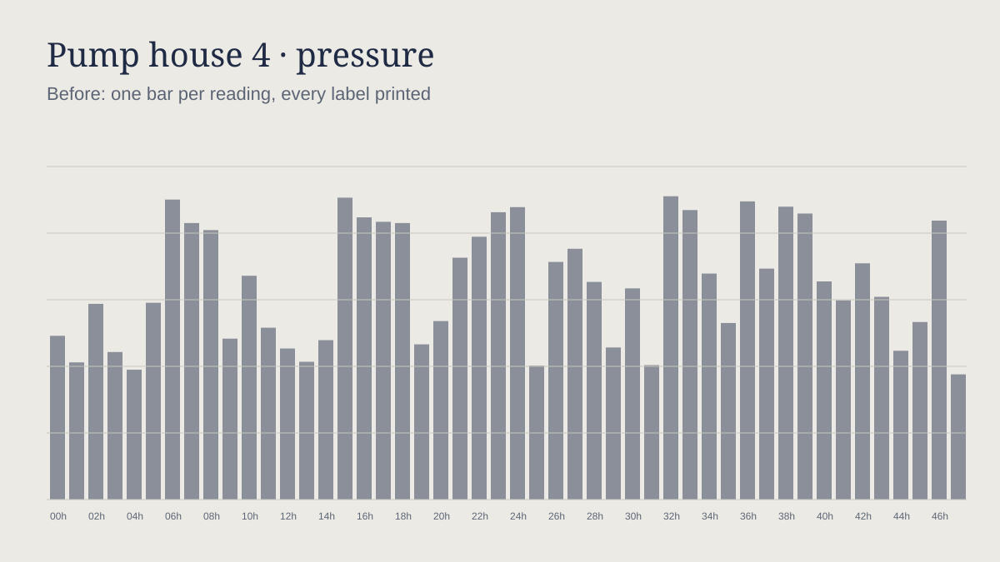
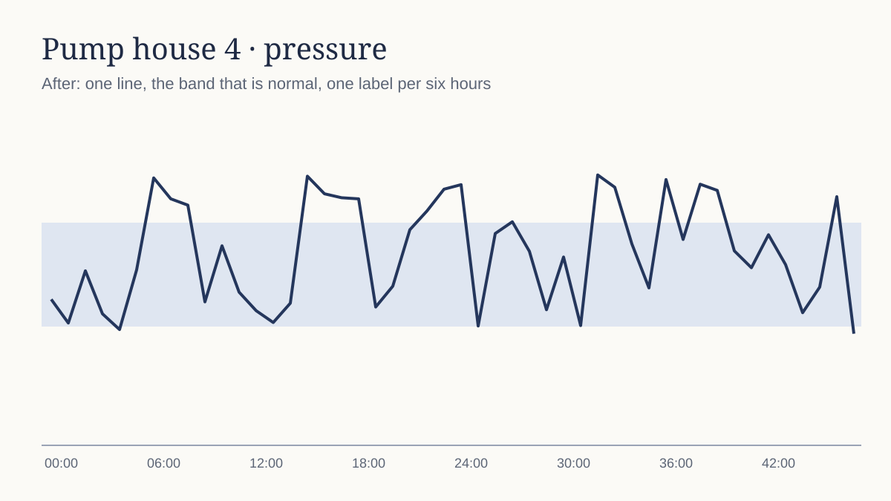

The fourth adoption round, part 4 of 9: Cards and states
Formal is approved. This part asks the eleven other themes for one group of components, 3 sections, one theme per step in the review dialog. The nine parts are judged one by one from the Agenda, so no single review holds more than 100 verdicts.
Every section says under Expected what you should see and what each control does (written for formal; the line under “What to look at” says what is the theme’s own).
Cards and states
A card in four data states
data-kp-state loading, empty, error or ready on a .kp-card, its data in
.kp-card__stage > .kp-card__data; setCardState() from js/card-state.js. Loading is
the data table's own loading card over the stage; empty the package's empty state; error the destructive alert with Try again
(event kp-card-retry).
Expected:
- The live card on the left: pick a state in the segmented control. The card's header ("Files", "5 files", the sentence) and its footer never move, and the card keeps its height in every state: the list keeps its room, hidden, and the empty box or the alert stands in it.
- Loading: the theme's spinner turning on its plate in the middle, "Reading the folder…" under it; the list under it dimmed, not clickable. Reload plays loading for 1.5 s and comes back filled; the card arrives and leaves the way the busy table's card does.
- Empty: the dashed empty box filling the stage, "No files yet" over its sentence and the "Open the folder" button. Error: the destructive alert, "Could not list the files" over the server's reason, Try again at its end; pressing it reloads (loading, then filled) and the focus stays in the card.
- The five still cards on the right: the first load (no data yet, the card at its least height with the loading card), a refresh (data under the loading card), empty, error and filled, each as tall as its row.
- The 360 px column: the same card; the alert's Try again goes under its words, nothing touches.
A card in four data states: loading is the shared busy card with dark's comet and spinner of spectrum bars, empty is dark's bracketed empty state, failed is the film gone coral with a normal Retry, ready lays its content by one pass. All four fill the same footprint.
Loading is the busy card with the reticle's lock-on, empty and failed fill the same footprint (the failure is the red locked alert with a normal Retry), ready is torn in sideways in six ticks.
Loading is the busy card with the marquee; empty and failed fill the same footprint (failed has a normal Retry); ready rises over its horizon in two beats.
A card in four data states: the loading state lays the shared loading card in pastel's own waiting pieces (the caterpillar), empty is pastel's folded-corner paper, failed is the red sticker alert with a normal Retry. The card keeps its height in every state.
A card in four data states: loading lays the shared loading card with forest's planted row of trees, empty is the kraft note with the dashed edge, failed is the red field note with a normal Retry. The card keeps its height.
A card in four data states: loading lays the shared loading card with the compass, empty is the compass mark with its dashed plate, failed is the red alert with a normal Retry. The card keeps its height.
A card in four states: its titles are in the serif, the loaded data rises into place when it returns, a failure reddens the card's own foot, and loading shows the sun on its arc in the busy card. All four keep the card's footprint.
The card is a slab in all four states; the failure is taped off along its foot with hazard stripes, the data that returns is set down from up-left and stops dead, loading is the lintel in the busy card.
The card is a plate in all four states; titles are Poiret capitals; the data that returns comes up with the lacquer; loading is the lift doors in the busy card.
The card is a plate with its bay: loading is the busy card with the tape reel and the amber screen along its foot; empty is the empty state's well with its tape title; failed is the red alert with a normal Try again. All four fill the same bay, so the header and footer never move.
The card keeps one footprint: loading is the busy card in the anodising bath with the facing-cut spinner; empty is the empty state's plate; failed is the alert with a normal Try again. Nothing around moves between the four states.
The live card
Files
Everything in this application's folder; View opens it here, ↗ in a new tab.
360 px (a phone), its first read failed
Files
Everything in this application's folder.
The five states side by side
First load
Loading, no data yet: the stage's least height.
Refresh
Loading again, the data under the card.
Empty
Nothing in the folder yet.
Error
The read failed; Try again reads it again.
Filled
The data.
Page header: a mark, a badge and the freshness line beside the title
The package already has the page header and the ticking “updated 12 s ago” line; this adds one opt-in line around the title so a dossier page can put its company mark before the title and its badge and freshness after it.
The page header keeps its title and badge; the freshness line beside it is a small reading in the ticker mono.
The page header keeps its title and badge; the freshness line beside it is a small cyan mono read-out in capitals.
The page header keeps its title and badge; the freshness line beside it is a cyan OSD read-out.
The page header's lead is a sticker mark, the title keeps its weight, the badge is pastel's sticker and the freshness line stays on its own quiet line without jumping as it ticks.
The header lead is a wooden tag, the title upright, the badge a field note, the freshness line in italic on its own line without jumping as it ticks.
The header lead is a hatched square mark, the title upright in the sans, the badge in the lettering, the freshness line a quiet readout that does not jump as it ticks.
The page header's title is in the serif; the mark, the badge and the freshness line sit on one line and never touch the title.
The page header's title is Archivo capitals, the freshness line in the mono; the mark, badge and line stay on one row without touching.
The page header's title is Poiret capitals with a wide tracking; the freshness line is Josefin; the mark and badge stay on one row without touching.
The mark is a label plate before the title, the title is Michroma, the badge is label tape, and the freshness line is mono capitals that tick without moving anything. The header's keys keep their lamps and press into a well.
The mark is a stamped tag before the title, the freshness line is Martian Mono and ticks without moving anything; the header's keys are titanium's own, with the chamfer pair and a 1 px drop on a press.
Expected:
- Desk width: mark, “Brightline Health”, an “Interview” badge and “updated 4 s ago” on one line, ticking every second; the description under it; Export and the primary action on the right, level with the title.
- A long title wraps under its own words and the badge and freshness line follow it, never overlapping the actions. Phone width: the title line wraps, the actions fold under the description with the primary first at full width, as the header already does.
Brightline Health
InterviewData engineer, Antwerp. Second interview on 21/10/2026 at 14:00.
Vereniging voor Duurzame Logistiek Vlaanderen
SentProject lead for the regional freight data platform.
Phone width (390 px)
Brightline Health
InterviewData engineer, Antwerp.
Drawings for an empty state
data-kp-art on a .kp-empty: a small line drawing of what kind of empty it is, in the theme’s own
hand. Formal’s set is the ledger; a theme without a set shows no drawing.
Expected:
- Six empty states, each with its drawing centred over its title: none (a blank ruled page, the double rule at its head, the pen’s navy tick at the first line), nomatch (the page with the reading glass over its foot), error (an entry struck through in red ink, ruled off in red along its start), offline (the double rule broken in its middle), done (a column of figures closed with the navy double rule), locked (the ledger shut, its strap and clasp).
- On arrival every stroke is ruled in, top down, 0.4 s each and 0.06 s apart, at an even pace; nothing fades or grows. Draw again plays it once more. With reduced motion the drawings are simply there.
-
The drawing is a picture only: the title and the sentence say what it means. Small and large show
data-kp-art-size; the phone shows one in 390 px.
Dark's set is the spectrum: a screen cut on two corners with a faint grid, a baseline, and the film as the acting stroke. Nothing found shows brackets round nothing; an error shows the line cut in coral; offline is the track broken in two; done is the track laid in full with the bracket closed. Each drawing is laid by one pass, left to right.
Cyberpunk's set is the HUD: a holo card cut at its dossier corner with the reticle's four corner brackets in yellow. Nothing found is the reticle hunting wide; error is the card torn in two with red bands; offline is four bars of signal struck through; done is the reticle closed on a tick; locked is a notched padlock. Each is torn in sideways and jitters home in six ticks.
Synthwave's set is the floor under its existing sun: the marquee's bulbs unlit for none, a neon ring over a laid laser for nothing found, a red neon ring with its bar for an error, the horizon tube cut in two for offline, every bulb lit for done, and a shutter with a lock for locked. Each drawing rises over its horizon in two beats.
Pastel's own empty-state drawings: a sticker sheet. Each drawing is white paper with the sky second pass 5 units off register and one strip of mint washi tape; none, nomatch, error, offline, done and locked are a planner page, a page with a lens, a crossed-out sticker, two stickers on a broken thread, a round tick sticker and a shut planner with a padlock. On arrival the pass slides in and the paper swings down from its top-start corner, 60 ms apart, tape last.
Forest's own drawings: the field kit. A map sheet with the leaf corner, contour lines, a trig point, a trail that runs out, a tree with a crossed red blaze, two banks of a trail with a stream between, a grown tree with a flag at the trig point, a fastened gate. Each stroke grows up out of its own line on the growth curve, 80 ms apart, turning from autumn to green as it grows.
Blueprint's own drawings: a working drawing. A part not yet drawn (corner marks, centre lines, the compass circle), a circle with a leader to an empty note, a part with the red filled triangle flagged, two parts on a centre line with the break between them, a hatched checked section, a part held under a padlock. The pen draws each stroke in cyan on the plotter's feed, half a unit apart, then it is inked in the finished line.
The empty-state drawings are the low sun on a horizon: none is the sun half up, nomatch an empty arc with a hollow ring, error a reddened sky, offline a broken arc, done the full sun, locked the sun behind a shutter. Each stroke rises from the horizon on a smooth sine, the sun first.
The drawings are slabs in heavy ink strokes: none is an empty slab on its footprint, nomatch the slab lifted off its footprint, error a slab taped off with red stripes, offline two slabs with a cut cable, done a slab with a stamped tick, locked a slab with a padlock and four square bolts. Each stroke is set down from up-left and stops dead.
The drawings are the lobby's fan in gold hairlines: none is the fan closed on its pivot over the double rule, nomatch the ribs without the leaf, error one rib broken in ruby, offline two chevrons turned toward each other, done the fan wide open with its leaf, locked the fan folded shut with a lozenge clasp. They are drawn from the centre outward, two strokes at a time.
Six drawings written on an amber screen: an empty cassette bay (none), a scope with no blip (nomatch), tape spilled in red off its reel (error), a jack and its socket drawn apart (offline), five lit lamps and a check (done), a key switch (locked). The screen is struck on from the top in four frames, then every vector is written in a frame apart, in whole 80 ms frames.
Six drawings on a machinist's drawing: a blank chamfered plate with its datum cross (none), a plate probed with nothing found (nomatch), a plate fractured through in bronze (error), a bar parted with its gap dimensioned (offline), a finished part with its bore inspected (done), a part under its clasp (locked). Each stroke is cut in from the start edge on titanium's curve and cools from gold through violet and blue to bare metal.
No applications yet
Applications you send appear here.
Nothing matched
No schedule matches “backup nightly”.
Could not read the stacks
The Docker host did not answer within ten seconds.
No connection
The dashboard reconnects by itself when the network is back.
All clear
No follow-up is due this week.
Not yours to see
Only the owner of this homelab can read the secrets.
Small
Nothing waiting
Large
A new ledger
Add the first stack to begin.
A phone (390 px)
Nothing matched
No application at a company called “Wexford Shipping and Cold Storage Holdings”.
Values and figures
Identity mark
A small plate made from a name, so a company or a stack is found in a list before its name is read. The same name gives the same mark on every page. It is decoration: the name always stands beside it.
Each name gets a plate cut on two opposite corners with its own colour as the edge, and the letters are set in the ticker mono. The round mark becomes an octagon, never a circle, and the current mark carries a plain two-colour ring off its edge. Look for the corner glyph: it is the one corner left uncut.
Each name gets a plate cut at its end corner in the name's colour, the letters in the machine's mono. The round mark is a notched square, never a circle; the corner glyph sits on the uncut corner. The current mark has a plain yellow outline.
Each name is a plate with 2 px corners in its colour, the letters in the chrome display with a soft bloom. The round mark is a neon ring with a near-white core and a bloom in the name's colour; the current mark takes a tube ring.
A sticker, not a plate: each mark stands on its own flat peel in a darker shade of its colour, round ones as pills, and the current mark in a list is ringed by a dashed plum line (never a solid navy ring). A group of marks is stuck down overlapping with a paper edge between them. See that the peel is flat, that nothing is blurred, and that the corner glyph stays a small clean shape.
A wooden tag with the leaf corner (two corners round, two square): the colour of the name stained into light wood with its grain, the letters in the italic note voice. A round mark is a tree ring, a ring inside a ring. The current mark in a list has the solid green ring, the corner glyph is a clay trig mark. See the grain on every size and that nothing is glowing.
A section on the drawing: a square frame in the name's own ink with the pen's 45 degree hatch inside, the letters in the lettering (mono capitals sloped 15 degrees); a round mark is the compass circle. The current mark in a list has the pen's frame and the two amber witness lines at its ends.
Each mark is a small lantern: its colour glows up from the foot of the plate, the letters are in the serif, the round mark is a small sun, and the picked mark wears a halo (a ring held off the plate with a soft amber glow). Look for the glow at the foot, never a flat tint.
Each mark is a flat square of paint in a thick ink line with its own small hard shadow, the letters in black Archivo capitals; the round mark has a second frame stamped inside it, a picked mark gets a fat 4 px frame, and corner glyphs are square bolts.
Each mark is a small lacquer plate with a wash of its own colour inside a double gold inlay and cut corners, the letters in champagne Josefin capitals; round marks are jewels in a double ring, corner glyphs are gold lozenges, and the picked mark has a double gold ring.
Marks are label plates cut like label tape: 2 px corners, mono capitals, a raised moulding with its lit top edge. A pattern mark is a tiny amber screen: dark glass with scanlines and the pattern lit in the name's own colour. The corner glyph is a lamp, the current mark is a key sunk in its well with a ring round it, and a loading mark is a small glass whose lamp lights and goes out. Look for the raised plates, the glass patterns and the dotted lamp in the corner.
Marks are stamped part tags: square with the register's chamfer pair cut outwards past the box, a bright tool edge on top and engraved Martian Mono letters. A pattern mark is laser-etched on bare metal (dark cells on the colour). The current mark has a bare-metal ring cut inside its chamfer; the corner glyph is a small square. Look for the cut corners and the engraved letters.
Expected:
- The table: one row per look, one column per size (xs 20 px, sm 24, md 32, lg 44, xl 56). Extra small shows one letter; every other size two. The glyph row has a small circle, square, triangle or diamond on the top corner, picked by the name; it is not drawn at xs.
- Free hue: the same lightness and strength as formal’s first chart ink, the hue from the name (the homelab dashboard’s one colour per stack).
- States: an empty name is a dashed quiet plate with “?”; the current mark in a list has a navy ring kept off its neighbours by a paper halo; loading is the plate’s own shape pulsing (still with reduced motion).
- A list read together (the eight stacks): no two marks share a colour while one of the five is free; the sixth name onward shares.
- A group: marks overlap with a paper edge, and the rest is an exact “+7”, never “9+”. In a table cell the long name is cut with an ellipsis and never runs under the mark.
- Rename (button): the first mark’s name changes; its colour, letters and pattern follow.
Every look at every size
States, a list, a group and a table cell
Phone width (390 px): in a table cell
| Company | Phase |
|---|---|
| Brightline Health | Interview |
| Vereniging voor Duurzame Logistiek Vlaanderen | Sent |
| Contoso | Offer |
Share bar
One bar split into the parts of a whole (what fills a disk, where the money went), with a legend that gives every part its exact value and the free rest.
The share bar is the machined channel of dark's progress bar: ticked track, cut corners, parts laid left to right by one pass of 660 ms and then still. Pointing at a part, or at its legend row, rests the 2 px line of film at that part's start edge; the threshold is a lit tick, and every reading is in the ticker mono.
The share bar is a notched track with scan lines. A part you point at lights its circuit grid in one tick; the threshold is a cyan reticle tick, and the title is a prefixed mono label. On arrival the bar is torn in sideways and jitters home in six held ticks.
The share bar is a held tube track with the stripe's gap between parts; pointing at a part turns it up in one step, with its colour's bloom, and its legend label takes the pink tube. The title is the OSD in capitals after a cyan arrow. The bar rises over its horizon in two beats.
The bar is one pill with the second ink (sky) lying 3 px off register beside it. Pointing at a part lifts that part out of the bar 2 px on its own peel and washes its legend row mint; the threshold is a plum pearl on a thread; the legend swatches are pearls. Loading and the failed note keep the bar's height and use the shared loading and dashed empty plate.
A wooden gauge routed into the page: the track is light wood with grain and a routed edge, each part is the same wood stained in its colour. The threshold is a clay trig point, a small triangle on the scale. Pointing at a part draws the dashed green blaze round it and blazes its legend row inside; legend names are italic notes, figures upright.
A dimensioned measure: every part is a hatched section in its own ink with a thin frame, the free rest an empty frame, the threshold the amber pointer on the scale. Pointing at a part sets the pen's frame round it and the amber witness lines on its legend row; legend names are lettering, figures the mono readout.
The bar is a horizon: every part is lit at its foot, the 80 % limit is a small amber sun on a thin stalk, and the legend row you point at has the sun risen under it (an amber line along its foot with a warm wash). A sum past the whole ends in a ✳ instead of an arrow.
The bar is a rule printed in the ink line on its hard shadow, parts are flat paint divided by ink, the limit is an ink block standing out of the bar. Pointing at a part lifts it up-left while its shadow stays; the legend row under the pointer turns into the yellow plate.
The bar is the inlay doubled: two gold hairlines round a dark track, the parts flat between them set apart by the lacquer, the limit a gold lozenge on a hairline, the legend swatches lozenges. The legend row you point at is warmed by gold leaf.
The share bar is a lit window. The free rest is a row of unlit LED cells in a dark window set in a bezel, each part is a run of lit lenses with a bright top, and the seams between parts are dark vent slots. The legend swatches are small round lamps, the title is label tape and the figures are in mono. Pointing at a part lights its rim in the LED orange. Failed reads sound the klaxon: a 3 px red frame round the note.
One bar of metal with parts cut from it: the track is a pocket with the carbon weave and a chamfered end, parts have a bright tool edge along their top, and the seams are milled grooves. Pointing at a part turns its tool edge to bare bright metal at once; the legend swatches are chamfered chips. A failed read is a plate with a bronze edge along its top.
Expected:
- Ready: “Root volume” with “81.5 GB / 120 GB” at its end; five parts in the chart inks and the free rest as the track; a tick at 80 %. The legend lists each part with its exact size and “Free 38.5 GB”.
- Point at a part (or Tab to the bar, then the arrow keys): the hover card says the name, the size and the share; the part gets a ring and its legend row is shaded, and the other way round when you point at a legend row. Home and End jump to the first and last part. A click writes the part in the readout.
- Loading: the bar is formal’s own loading picture for a bar, the meter’s: one navy rule ruled along the bar’s groove, held, lifted from the start and ruled again (2.4 s, an even pace). It is the picture Kenny chose for formal’s meter on 08/10/2026 (“loading is ruling the lines”), and the one the bullet rows’ bars and the table’s bar cells wait with. A share bar is one figure, as a meter is, not a data area, so it does not lay the table’s loading card. The legend keeps its six rows as formal’s ruled waiting lines; nothing under it moves.
- Not read and Failed: one calm note in the empty state’s dashed frame over the bar’s and the legend’s whole footprint, exactly as tall as Ready: the sentence in formal’s empty-state title (italic display face) and, for Failed, a normal-size Retry button beside it (under it at phone width); Retry reads again (Loading, then Ready). The small and large bars under the live one have no legend and no room for words: they keep their track and give the sentence in their hover card.
- Over the whole: the parts add up to 131 GB of 120 GB; the bar is their sum, a red ▸ stands at its end and the last row says “Over by 11 GB” in strong ink. Nine parts: the sixth to eighth take the inks again hatched, and parts under 2 % are merged into “Other”.
- Sizes: small (8 px) and large (20 px) under the live one. Phone width: the legend goes to one column.
Nothing picked yet.
Phone width (390 px)
Bullet rows: a value against a threshold
One row per item with a bar whose tick is the threshold, worst first: days since the last contact against 14 days, a backup’s age against its limit, days to a certificate’s expiry.
The bars are dark's own meter. A row that is warned or over its threshold turns the film along the figure's edge coral or amber and nothing else: no filled plate. The rows are laid one pass at a time, 60 ms apart, and a hovered link row rests the line at its start.
A warned or over-threshold row locks its figure as a target: four 2 px corner brackets in the tone's ink round a mono read-out, no filled plate. Rows are torn in one tick after each other; a hovered link row lights its circuit.
The figure is the OSD's read-out; a warned or over-threshold row has the hollow neon ring in the tone's ink before the figure and the figure glows in that ink. Rows rise over their horizon one beat apart; pointing at a link row turns the label's tube up.
Rows that lead somewhere take the mint wash of a hovered menu entry with the rounded entry corner instead of an underline. A figure past its threshold is a sticker on the warning or red plate with its own flat peel. The bars are pastel's own meter. Failed and nothing-due fill the list's full footprint with a normal Retry.
Rows that lead somewhere are blazed inside with the dashed green ring when pointed at (no wash, no underline); a figure past its threshold is a field note, a square italic tag on the warning or red pair; the detail line is italic. The bars are forest's wooden meter.
Rows that lead somewhere get the two amber witness lines at their ends on pointing, no wash and no underline. A warning figure is flagged with the outlined triangle before it, a failure with the filled one, in the tone's ink on no plate; the detail line is lettering.
Titles and figures are in the serif. Pointing at a row lights its foot in amber with a warm wash and no underline. A warning or failing figure is the tone's light in its own ink on a faint wash from its foot, never a solid plate.
Labels are bold capitals. A row you point at lifts up-left onto a hard shadow and turns yellow; a warning figure is yellow paint, a failing one red paint, each in an ink frame with its own small shadow.
Pointing at a row warms it with gold leaf and a full gold hairline under it, the label turning champagne. A warning or failing figure is ruby over a gold rule (double for a failure), never a plate.
Each row keeps the console's LED bargraph as its bar, with the threshold as the lit tick. The figure is a Michroma count; a figure past its limit sits on a framed label tape, never a soft badge. A row that leads somewhere rises like a key under the pointer (raised, lit rim) and sinks into its well when pressed. Nothing due and failed are the empty state's plate at the list's full size with a normal Retry.
The bar is titanium's heat-tinted groove meter. The figure is Martian Mono; a figure past its limit is a plate with the chamfer pair. A row that leads somewhere shows a bare-metal bar on its start edge under the pointer, instantly, and drops 1 px when pressed.
Expected:
- Ready: six applications, worst first. 31 d and 22 d are past the 14-day threshold (21 d is “bad” here, so 31 d and 22 d are red, 18 d is warning); the bars run to 28 days and 31 d shows the meter’s ▸ at the end. “Northwind” has no status record: a dash and no bar. The tick sits at the same place in every row.
- The rows are links: point at one and the whole row shades and the role is underlined; Tab reaches each role, Enter follows it (here it only writes the readout).
- Loading: the six rows keep their places as waiting rows (formal’s ruled lines, the bars in the meter’s ruled loading) and the table’s own loading card (formal’s seal and “Reading…”) stands in the middle; the list keeps its whole height, and when the card has gone the rows are drawn.
- Nothing due: formal’s empty state fills the list’s whole footprint, exactly as tall as the six rows, with “Nothing to follow up.” and the reason centred in it. Failed: the same footprint, the sentence centred and a normal-size Retry button under it (as wide as its word, as tall as every other button); Retry reads again: Loading, then Ready. Nothing under the list moves between the four states.
- Phone width: the bar takes a line of its own under the role and the figure; nothing is cut but the long role, with an ellipsis.
No row followed yet.
Phone width (390 px)
A live number that ticks to its new value
data-kp-count already counts a number up once when it arrives. A live counter changes after that; marked
data-kp-tick, it counts from the number shown to the new one whenever the page writes a new number, and lands
on exactly that text.
A changed figure takes the film through its letters in one pass of 660 ms and settles back to ink; it never moves or flares. Look at the figure staying exactly in place while the colour crosses it.
A changed figure stutters home: a yellow and a cyan copy sit 6, 4, 2, 1 px off and come home in four ticks, the figure itself never moves. Held poses only, no easing.
A laser is drawn under a changed figure from its centre outward in one beat, flares, and burns down in three beats; the figure itself never moves.
A live number that counts wobbles once round its foot, 800 ms, like jelly, while it ticks (pastel's live change); nothing swells and nothing flashes. Press the page's button that changes the number and watch the figure rock and settle.
A live number that counts has a growth ring drawn round it once, clockwise from the top on the growth curve, which then fades; the number itself never moves or swells. Change the number from the page and watch the ring.
A live number that counts is read again: a short ruler is set under it with an amber pointer that slides from the old reading to the new on the plotter's feed and is then lifted; the number itself never moves.
A counting number stands overbright and warm, like first light, while it runs and cools into its ink when it lands. It never swells or jumps; watch the colour settle after the last digit.
While a number counts it carries a yellow copy of itself 3 px down-right, like the headline slam; the yellow is struck off in one cut the moment the number lands.
While a number counts it is gilded: gold with a soft glow that settles into its ink when it lands. No swelling, no jumping.
A changed count prints itself in 8 frames of the ship's clock (640 ms), so the digits step in visible frames instead of gliding; digits keep their width. The tile is the case's own key-figure plate with its lamp and label tape.
A changed count runs in one cut of 240 ms; digits keep their width, nothing flares or glows. The tile is titanium's machined key-figure plate.
Expected:
- +3 open items: “12” counts to “15” in about 0.6 s. +250 requests: “1,204” counts to “1,454”, the comma kept. −5 counts down. Jump +1,000,000: a jump too far to follow counts only its last 400 steps, then lands exactly.
-
The Dutch tile (
lang="nl") keeps “1.118.204,75”: the dot groups and the comma is the decimal point, and the count keeps both decimals. - Press twice fast: the second change starts from wherever the first had got to, never from the old number. With reduced motion the new number is written at once.
Written: 12 · 1,204 · € 1.118.204,75
Uptime strip: 90 days and 48 hours
.kp-uptime[data-kp-uptime] with
setUptime(el, { label, periods, from, to, open }) (js/uptime.js): one cell per period, toned up, degraded,
down or no data, the window’s summary in exact figures over it. For the homelab Health page per service and for kyu’s
delivery per hour.
Expected:
- Four strips, each one line high: the name on the left, the summary on the right (100% · 0 incidents for jellyfin; kyu’s share is cut, never rounded up, and its incident count is the exact number). The cells never wrap.
- Up is a soft green bar, degraded a lighter amber bar with fine horizontal rules, down a red bar with diagonal stripes, no data an empty frame (almanac’s first 26 days). So every state is a shape as well as a colour.
- Point at a cell: it grows a little upwards (nothing beside it moves) and the hover card opens under it with the day, its state and its figures. Tab into a strip: one stop, on today’s cell, with the card open; the arrow keys walk the days, Home and End jump to the first and today.
- The cells open something (new, both opt-in). jellyfin, kyu and kyu delivery open a period’s quick info: press a cell, or Enter or Space on the focused one, and formal’s popover plate opens under it with the day, a swatch of the cell with its state word, the exact figures, what happened (kyu’s bad days and hours) and, for the days, an Open 16/10/2026 button to that day’s page. The cell stays raised with the focus ring, so the plate reads as its own; the hover card rests meanwhile. The arrows carry the quick info along the strip; a second press, Escape (the focus goes back to the cell) or a press outside closes it, the open played backwards.
-
almanac has a page per day and no quick info: every day with data is a link; a press, Enter or Space follows it
(here the grey box says which page it would open, the demo has no day pages). The grey box also logs
kp-uptime-pickandkp-uptime-open. - Under each strip: “90 days ago” at the start and “Today” at the end (“48 hours ago” and “This hour” for the hours).
The strip is laid by one pass from the start. A cell you point at takes the line on its top edge with a small glow; nothing lifts. Percentages, incident counts and the axis are readings in the ticker mono.
The strip is decoded start to end in ten held steps. A cell you point at lights its circuit and takes a yellow outline; the title is a prefixed mono label, the percentage a cyan read-out.
The strip rises over its horizon. A cell you point at turns up with a bloom in its own colour; the title is the OSD after a cyan arrow, the percentage a cyan read-out.
Every period is a tiny sticker on its own peel with a 4 px corner; the cell you point at grows upward and a focused or open cell is ringed by the dashed plum line. The share is plum, an error summary is a red sticker with a peel. Up, degraded and down still differ by shape (plain, ruled, striped), not only colour.
Every period is a plank of the strip with the small leaf corner; the up planks carry wood grain; pointing blazes a plank with the dashed green ring and focus keeps the package's ring. The axis and the figures in the hover card are italic notes.
Every period is a thin square section; the one you point at grows upward and focus is the pen's frame; the percentage is the mono readout, a failed summary is flagged with the filled triangle in the red on no plate; the axis is lettering.
A strip of days is a hillside lit from its foot: each cell keeps its fill and pattern and takes a faint light at the bottom. Pointing at a cell raises the sun under it (an amber foot line and a glow); the title and the percentage are in the serif.
The strip is square blocks of paint (green, yellow, red with the stripes) in a thin ink line. Pointing at a cell lifts it with a small hard shadow. Title and percentage are in Archivo, figures in the mono.
The strip is slats of lacquer between gold hairlines: up is emerald, degraded gold with its fine rules, down ruby with its stripes, no data an empty gold frame. Pointing at a slab warms it and lights its edge to full gold; titles are Poiret capitals.
The strip is a lit LED window: a dark window in a bezel, every period a lit lens (green up, amber degraded, red down) with a bright top and a faint glow; no data is an unlit outlined cell. The pointed cell is rimmed in the LED orange and grows at once, in two frames. The title is label tape, the share is Michroma, the dates are mono capitals. The quick info is the case's own popover, struck on like a tube.
The strip is machined slats in a milled pocket with the carbon weave: unlit slats are the pocket's dark ground, lit slats have a bright tool edge along their top. The pointed slat grows and gets a bare-metal tool edge at once (60 ms, linear). Title and figures are Martian Mono, the quick info is the register's popover cut open from the top.
Uptime strip: loading, empty, error, a long name
One strip, its state chosen with the control (demo). Every state keeps the same height and the same place.
Expected:
- Loading (the start): the cells pulse as skeleton bars, the summary is a pulsing bar, and the data table’s loading card (formal’s spinner and “Reading the history…”) stands in the middle of the strip, on its opaque plate.
- Ready: the loading card leaves the formal way, then kyu’s 90 days are drawn. Nothing above or below the strip moves.
- Empty: 90 empty frames and “No data yet” in muted ink where the summary stands.
- Error: 90 empty frames and the page’s sentence on the red plate where the summary stands; the strip keeps its place.
- Long name: the name is cut with an ellipsis (the full name is in its tooltip); the summary is never cut and never touches the name.
Loading is the shared busy card in dark's comet, the line with a film tail crossing the empty slots; an error summary is the film gone coral along its edge, not a red plate. Every state keeps the strip's height.
Loading is the busy card with the reticle lock-on; an error summary is the red-ink outline with the page's sentence. Every state keeps the strip's height.
Loading is the busy card with the marquee bulbs chasing one in four; an error summary is a 2 px chip in the red. Every state keeps the strip's height.
Loading shows pastel's own waiting pieces inside the strip, nothing under it moves; empty and failed keep the strip's footprint and say so in one line. The failed sentence is a red sticker on its own peel.
Loading shows forest's planted waiting pieces in the strip, empty and failed keep the strip's footprint; the failed summary is a field note (square, italic, on the red pair).
Loading is the pen hatching the sections start to end in the strip; empty and failed keep the strip's footprint and say so in one line.
Loading is the low sun's light crossing the strip from start to end, with the sun on its arc in the middle as the busy card. Empty and failed keep the exact footprint of the loaded strip; a failure reddens its own foot light instead of showing a red plate.
Loading is the lintel hoisted: one well along the whole strip with one beam on two cables lifted in hard steps, plus the busy card in the middle. Empty and failed keep the exact footprint; a failure is red paint in an ink frame.
Loading is the glint running between two gold hairlines along the strip, with the lift doors in the busy card in the middle. Empty and failed keep the exact footprint; a failure is the words in ruby over a gold rule.
Loading is the lamp bank computing along the whole window (five unordered patterns every 4 frames) with the shared busy card in the middle; empty and failed keep the strip's full height; a failed summary is a label-tape plate in the destructive ink.
Loading is the anodising bath: the oxide colours drift start to end over the slats with the busy card in the middle; empty and failed keep the strip's height, the failed summary a plate with the tool edge.
Uptime strip at phone width
The same 90 days in a 360 px frame: by default the latest days that fit; with
data-kp-uptime-fit="scroll" every day, scrolling sideways.
Expected:
- Fewer cells: the strip still fills one line; it shows the latest days that fit, and under it the first shown day’s date, “N of 90 shown” in the middle (the exact number) and “Today”. The summary still speaks of all 90 days.
- Scroll: all 90 cells, a little wider, scrolled to today; drag or swipe sideways to see the older days.
- Loading: the busy card fits in the frame, its words on at most a few lines, never cut.
At 390 px the strip keeps its cells square and the summary stays on one line; the pass and the line on hover behave exactly as at full width.
At 390 px the strip and its summary keep one line each; the tear, circuit and outline behave as at full width.
At 390 px the strip and its summary keep one line each and the rise and the bloom behave as at full width.
The same sticker cells at 390 px: the strip scrolls sideways inside its box with the mask at the edge, cells keep their peel, and the info card opens under the cell it belongs to.
At 390 px the strip scrolls sideways in its box, planks keep their leaf corner and the card opens under its plank.
At 390 px the strip scrolls sideways inside its box, the square sections keep their size and the card opens under the section.
The same strip at phone width: one line per strip, the serif title and the figures never touch, and the light still crosses while it loads.
The same strip at phone width, one line per strip; the thin ink frames keep the cells apart and no text touches.
The same strip at phone width, one line per strip; no text touches.
At phone width the strip keeps its window and bezel, the title never runs into the share, and the scrolling variant fades its far end; the busy card fits in its frame.
At phone width the strip keeps its pocket, the title and the share stay on one line, the scrolling variant fades its far end, and the busy card fits the frame.
Fewer cells (default)
Scroll
Loading
Rows and lists
Inbox rows (homelab Inbox)
.kp-action-list.kp-action-list--lead: per row a lead (.kp-action-list__lead, here the severity
dot), the words (.kp-action-list__main: __title, __text, __meta) and
the shared button columns. data-kp-state on a row draws a bar along its start edge.
data-kp-row-keys lets j / k walk the rows; setRowBusy() and removeRow() from
js/actions.js run "Mark seen".
Expected:
- Five rows. Every title starts at one edge after the dots; the buttons of one role line up from row to row (Open in one column, Mark seen in the next). Nothing touches: dot, words and buttons each keep a gap, and the long fifth title wraps inside its column without pushing the buttons.
- The bar on the start edge: blue for the two new rows, the info ink for the in flight row, none for the done row, whose title and dot are quieter (grey, not faded). Every row reserves the bar's room, so no state moves the words.
- Mark seen: the row dims, the pressed button shows the theme's spinner in place of its words (the button keeps its width, no column moves), the other button stops answering; after 1.2 s the row folds away and the focus moves to the same button of the next row. Make the next press fail makes the next Mark seen end with the row back as it was. Put the rows back restores all five.
- Click a row's words, then press j / k (or ↓ / ↑): the focus ring walks the rows; Enter on a row writes "Opened: …" in the readout. Tab reaches the list once.
- The 360 px column: the dot and the words side by side, the buttons centred under them, each label on one line.
A row's state is a 2 px bar along its start edge: the film for new and next, coral for failed, amber for a warning. Pointing at a row rests the line of film outside that edge; rows are laid one pass at a time, 60 ms apart. Times and meta lines are in the ticker mono.
A row has a 3 px bar for its state; a failed or warned row is locked as a target with four corner brackets in the tone's ink. Pointing at a row lights its circuit in one tick. Rows are torn in one tick apart, meta lines are mono capitals.
A new or next row has a pink-to-cyan bar on its start edge. Pointing at a row turns the title's tube up; a failed or warned row has the neon ring in front of its title with the title glowing in the tone's ink. Rows rise over their horizon one beat apart; meta lines are the OSD.
Rows sit on a thread of dotted pearls. The state bar on the start edge is a washi strip with round ends, 5 px wide; the next row is washed mint and its date is a mint sticker. Titles and buttons keep fixed columns and nothing touches. The buttons are pastel's own stickers.
Rows on the kraft ground with a short painted blaze on the start edge instead of a full bar (green for new, clay is never used for an action); notes (text and meta) are italic, titles upright; the next row has the moss wash. Buttons are forest's own.
Rows are lines on the sheet with a chain line on the start edge in the state's ink instead of a bar; a warning row is flagged with the outlined triangle before its title, a failed row with the filled one; the next row sits between two amber witness lines; meta lines are lettering.
Each row is a plate lit from its foot. Its state is the light on its start edge: amber for new, a cooler light for in flight, ochre for a warning, red for a failure; the next one up has the sun risen under it. What is done is quieter by ink, never faded. Titles are in the serif.
Each row says its state in a thick bar of paint on its start edge (ink for new, lavender for in flight, yellow for a warning, red-and-black hazard stripes for a failure); the next one up is the yellow slab in an ink frame. Done rows go quieter by ink.
Rows are ruled by gold hairlines and say their state in a double gold edge (gold for new, emerald for in flight, ruby for warning and failure with the title in ruby over a gold rule); the next one up is warmed by gold leaf. Group headings are Poiret capitals with a double rule.
A log of rows divided by dotted vent seams. The state is a bar along the start edge (ink for new, the info ink for in flight); a row that warns or fails is framed all round in 3 px of its tone like the bridge alarm. Buttons are the console's keys with their lamps; the pressed one shows the tape reel while its row is busy. The next-up row is sunk in its well.
Rows are separated by milled grooves. A row's state is a bar cut along its start edge: bare metal for new, blue oxide for in flight, gold for a reservation, bronze for a failure. The next-up row has a bare-metal tool edge along its top. The buttons are titanium's own: chamfered, instant, 1 px drop on a press.
The Inbox, full width
360 px (a phone)
A message backlog with payloads (kyu, JobTracker queue)
The same rows with a state word as the lead (the package's .kp-badge), the message id as title, a meta line
and a folded payload: details.kp-accordion__item.kp-accordion__item--bare.kp-action-list__more with a
pre.kp-action-list__payload, so it opens with the accordion's own fold motion. The list sits in a card in
four states (section 2), so when the last row goes the card says it is empty.
Expected:
- Four messages. The lead column is as wide as its widest word ("claimed") and the ids all start after it; the badges are centred in it. dead is the destructive badge with a destructive bar, claimed the warning badge with the info bar (in flight), pending plain.
- Payload folds open under the meta line: a muted, bordered block in the mono face, the JSON wrapped inside it (the long line never widens the page), at most 16rem tall and then scrolling inside. The buttons stay on the row's first line.
- Requeue on the dead row: spinner in the button, then the row turns pending (badge and bar change, nothing else moves). Delete: spinner, then the row folds away. Delete all four: the card turns into its empty state at the same height. Put the messages back restores them.
- The 360 px column: badge and id side by side, the meta wrapping by whole parts (a dot never starts a line), the buttons under them.
The same rows with a payload that opens under the row as a slot with cut corners in the mono. The failed message carries the coral edge; the dead badge and Delete stay dark's own.
The same rows with the payload in a notched mono slot. The dead message is locked red, claimed and pending keep the badge and Delete as cyberpunk's own.
The same rows with the payload in a 2 px slot in the mono; the dead message has the red ring before its id.
The same list as a backlog: round-ended state bars, a group heading written as a sentence (not capitals), meta lines on the dotted rule. Done rows are quieter by ink, never faded.
The backlog list with painted blazes per state, group headings written as italic notes, done rows quieter by ink.
The backlog with chain-line state edges, group headings in the lettering, done rows quieter by ink.
The same rows for a message backlog: lit from the foot, state shown by the light on the start edge, the serif for titles, buttons that are solstice's own with the sun rising under the pointer.
The same rows for a backlog: ink rules between rows, bars of paint for state, bold titles, buttons that are brutalism's own.
The same rows for a backlog: gold hairlines, a double edge for the state, the deco buttons with their gold inlay.
The same log with the job's payload folded away: opened, the payload is the ship's printout on a small amber screen (cream mono on dark glass with scanlines). Group headings are label tape with a dotted seam under them; the pressed row button shows the reel and keeps its width.
The same rows, the job's payload folded into a milled pocket (dark ground, shadow inside its top edge, Martian Mono). Group headings are engraved mono with a groove under them; the pressed row button shows the facing cut and keeps its width.
Backlog of backups-hourly
What this subscription still holds, oldest first. Deleting one removes only this copy.
360 px (a phone)
A file list (JobTracker Files)
The same rows for stored files: the format as the lead (.kp-badge), the plain name as title, format, size and
date in the meta, the documents that use it as badges, View and ↗ as buttons. The upload's own rows
(.kp-upload__file) stay what they are: they show files being sent, not files kept.
Expected:
- Five files. The format badges (PDF, TXT, IMG, DATA) sit centred in one column; every name starts at one edge. Sizes and dates are human (182 KB, 1.4 MB, dd/mm/yyyy HH:MM).
- The missing file: the destructive bar, its meta says why ("missing from the folder since 15/10/2026"), View is the theme's disabled button (its title explains on hover) and ↗ is gone, its column left empty.
- The long file name wraps inside its column; the badges of "used by" wrap as whole badges.
- The 360 px column: the format beside the name, the buttons centred under them.
A file list in dark's rows: the type tag is a mono microlabel, a missing file is the coral edge on its row, and View and the open-in-tab button are dark's bracketed buttons.
The file type is a mono tag, a missing file is a row locked red, and View and open-in-tab are cyberpunk's notched buttons.
The file type is an OSD tag, a missing file has the red ring, and View and open-in-tab are synthwave's own tube buttons.
File rows with the lead as a small sticker, dotted pearl rules between rows, and the payload opened under a row as a taped-in note: paper with a dashed edge and rounded corners.
File rows with a lead, italic meta lines and the payload opened as a kraft note with the leaf corner.
File rows with their meta in the lettering, and the payload opened as a dashed frame in the mono.
A list of files: the format sits in the lead column, the row's foot carries the faint light, and a failed file reddens its own sky. Buttons keep their columns and the busy press shows the sun on its arc.
File rows with the format in the lead column, ruled in ink; a failed file has the hazard stripes down its edge. Buttons lift and press like the theme's buttons.
File rows with the format as lead, gold hairlines between rows, a failed file's title in ruby over a gold rule. Buttons keep their columns.
File rows keep the log's grammar: the file's format on label tape in the lead, titles in the body face, dotted vent seams between rows, keys with lamps for View and Open. A missing file sounds the klaxon along its row.
File rows with the format in the lead as an engraved mono tag, milled grooves between rows, buttons cut with the chamfer pair; a missing file's row has the bronze bar along its start edge.
360 px (a phone)
Appointments with the next one up (JobTracker)
The moment as the lead (time.kp-action-list__when: the day over the hour), heading rows
(li.kp-action-list__group) for Upcoming and Past, data-kp-state="next" on the next one up and
"past" on what is over.
Expected:
- Upcoming and Past as small capitals across the list. The next appointment (Thu 23/10/2026 14:00) carries the primary bar, a light primary wash and its day and hour in the primary; its meta has the badge "Next · in 7 days".
- The past ones: day, hour and title in grey (not faded), the buttons as usual. Every title starts at one edge after the moments.
- Delete on the next appointment is the theme's disabled button, because it is in the calendar; its meta says so in words ("In your calendar: remove it there before deleting it here").
- The 360 px column: moment and words side by side, buttons under them.
The next appointment takes the film along its start edge and the lead in cyan; past ones go quiet by ink, not by fading. Dates and times are in the ticker mono.
The next appointment has a yellow bar and a cyan lead; past rows go quiet by ink. Times are mono read-outs.
The next appointment takes the pink-to-cyan bar and a lit pink lead with its tube; past rows go quiet by ink. Times are OSD read-outs.
Appointments with the next one on a mint wash and its time as a mint sticker with a flat peel; past ones go quiet by ink. The group headings read as sentences.
Appointments: the next one on the moss wash with its blaze, dates and times in the note voice, past ones quiet.
Appointments: the next one held between two amber witness lines, dates in the mono readout, past ones quiet.
The day and the hour are in the serif in the lead column; the next appointment has the sun risen under it (amber foot line and a warm wash) and past ones go quiet by ink, not by fading.
The day is in Archivo capitals and the hour in mono; the next appointment is a yellow slab in a frame, past ones go quiet by ink.
The day is in spaced capitals and the hour beside it; the next appointment is warmed by gold leaf with a gold edge, past ones go quieter by ink.
Appointments read as a log of days: the day is mono capitals over the hour, the next one is sunk in its well with a bar along its start edge, past ones are quieter by ink only. Group headings are label tape with a vent seam; the focus ring is the two-channel ring.
A list of days: the day in engraved mono over the hour, the next one with a bare-metal tool edge along its top on a muted plate, past ones quieter by ink. Group headings are mono with a groove under them.
360 px (a phone)
A check list with the fix written out (JobTracker System card)
The status rows (.kp-statusrow) with two opt-in parts: data-state="warn" and
.kp-statusrow__fix, shown on a failed or warn row only. countStatus(list) gives the summary
line; the card's Check again puts the card in its loading state (section 2) while the checks are read.
Expected:
- Four checks: two ok (green disc with a tick), Calendar as warn (the warning plate on the mark with "!", its rule in the warning ink) and Git as failed (red disc with a cross, red edge). Each says its state in a word under its name, and the two that need you have their fix written under that, in the page's ink.
- The summary over the list reads "2 of 4 checks pass" with the moment it was read; no Retry per row.
- Check again: the card's loading card for 1.5 s, then Git passes: its mark turns green, its fix goes (its line keeps its room, so the card does not move), the summary reads "3 of 4 checks pass". Press again to flip Git back. The card keeps its place throughout.
- The second list shows every state together (loading with the theme's spinner, empty, and a long fix that wraps).
- The 360 px column: one check per row, the fix wrapping under its word, nothing touching the edge.
Check rows keep dark's status rows. A warning row is the film gone amber along its whole edge with the fix written under the title behind a 2 px line; a failed one is the same in coral. Nothing is filled.
A warning check is locked as a target in the amber ink with its fix written under the title after a yellow prompt; failed is the same in red. No hazard band, no filled plate.
A warning check carries the hollow amber neon ring before its title with the fix written under it behind a hairline; failed is the same in red. No filled plate.
A check that passes with a reservation is a sticker on the warning's plate with its own peel; the written-out fix is a taped-in note: mint paper in a dashed edge. A failed check keeps its red sticker. The summary line and Check again change nothing in the card's size.
A check that passes with a reservation is a field note: a square italic tag on the warning pair; the fix written out has a clay blaze on its start edge and is italic. Failed checks keep the red field note.
A check with a reservation is flagged: the outlined triangle before its name, its detail in the warning's ink; the fix written out stands under an amber leader line. A failed check keeps the filled triangle.
A check with a reservation reddens its sky to ochre: the foot light and the mark are ochre, the detail is in the warning ink, and the written fix is a sentence in the serif. Failed rows keep the red sky.
A check with a reservation is taped off: yellow-and-black hazard stripes along its foot, the mark in warning paint. A failed row keeps the red stripes; the written fix is bold.
A check with a reservation has its name in ruby over a gold rule and a square mark with a ruby exclamation in a gold hairline; failed rows do the same; the written fix is plain text.
Check rows are raised mouldings with a round lamp mark. A warning is framed all round in 3 px of the warning ink, a failure in 3 px of red, the same klaxon. The fix written out is a readout: cream mono under a prompt on a small dark screen with scanlines. A loading row carries the lamp bank computing along its foot.
Machined rows with the chamfer pair and a tool edge. A warning is a gold tool edge along the top (the oxide's first heat), a failure a bronze one; the fix written out has a bare-metal bar on its start edge, an instruction rather than an aside. A loading row is in the anodising bath.
System
What JobTracker needs to work; a failing check says how to fix it.
2 of 4 checks pass · read 16/10/2026 14:02
- Data folder readable and writable
- Session launcher ready
- Calendar (Almanac) partly set up Add the Almanac token to the configuration to send follow-ups and interviews.
- Git 2 commits not pushed Pull and push from the repository; the dashboard never rebases.
Every state, and a long fix
- Backup target reading (3 s)
- Schedules none set up, so nothing to check
- Certificate of media.kp-soft.dev expires in 9 days Traefik renews it by itself from 30 days before; it has not, so look at the Traefik log for the ACME error (usually the DNS token) and renew it by hand from the Certificates page once the token works again.
- Disk of the host 96 % full Free space: the oldest snapshots go first.
360 px (a phone)
- Data folder readable and writable
- Calendar (Almanac) partly set up Add the Almanac token to the configuration to send follow-ups and interviews.
- Git 2 commits not pushed Pull and push from the repository; the dashboard never rebases.
A sort the page carries out
data-kp-sort-external on a .kp-datatable: homelab’s Schedules table rebuilds its rows itself.
The table draws and announces the sort; this page sorts its own data on kp-datatable-sort and calls
refresh().
Expected:
- It opens sorted by Next run, soonest first: the arrow on that header, and the line under the table says what the page did (“The page sorted by Next run, ascending”).
- A click on a header sorts on it alone, a second turns it round; Shift + click adds a key, and the headers then carry their place (1, 2) and the line above the table says the sort in words, with Back to Next run to return. The rows come back in the new order with no jump of the header or the page.
- Note cannot be sorted now (its sort is off while notes are edited): no arrow, no pointer, a click does nothing.
- Read again lays the table’s loading card over the rows for 1.5 s; the arrows and the key numbers stay while it loads, and the rows come back in the same sort.
- On a phone the rows are cards and the sort is the card layout’s own control; the page still sorts.
The sort a page carries out is drawn in dark's own table header, unchanged from the approved table: a column that cannot be sorted now is quiet and gives no pointer. Look that the header keeps its bracketed, ticked look and nothing shifts when the order changes.
The sort a page carries out is drawn in cyberpunk's own table header, unchanged from the approved table: a column that cannot be sorted now is quiet and gives no pointer.
The sort a page carries out is drawn in synthwave's own table header, unchanged from the approved table: a column that cannot be sorted now is quiet and gives no pointer.
Pastel's own data table with the page's external sort: the sorted header carries pastel's arrow, the column that cannot be sorted now has no arrow and no pointer. Nothing on the table is redrawn by this round beyond that.
Forest's own data table with the page's external sort; the sorted header carries the table's arrow and the column that cannot be sorted now has none and no pointer.
Blueprint's own data table with the page's external sort: the sorted header shows the table's mark, the column that cannot be sorted now has none and no pointer.
Nothing new is drawn here: the table keeps solstice's own head and sort marks. A column that cannot be sorted now is quieter and has no pointer, and the readout under it still names the sort.
Nothing new is drawn: the table keeps brutalism's own heavy head and sort marks; a column that cannot be sorted now has no pointer and a quieter mark.
Nothing new is drawn: the table keeps deco's gold-ruled head and sort marks; a column that cannot be sorted now has no pointer and a quieter mark.
The sorted header lights its lamp: every sortable header keeps an unlit lamp before its name, so nothing shifts when a column becomes the sorted one, and the sorted one's lamp is the LED, lit, with the direction arrow after the name. A column that cannot be sorted has no lamp and no arrow. Pressing a header lights its lamp fully.
The sorted header carries the tool edge in bare metal along its top, at once and linear; pressing any sortable header drops it 1 px; the arrow is Martian Mono; a column that cannot be sorted has no mark and no pointer.
The page’s own width
| On | What | When | Next run | Last run | Note |
|---|
A phone (390 px)
| On | What | When | Next run | Last run | Note |
|---|
Records and forms
Key-value grid
A read-only list of facts about one thing (a host, a release, a message), the pattern every app wrote by hand. The values reuse the package: ids in the mono face, a copy button, badges, the freshness line.
Keys are small microlabels, identifiers are mono, and a row with a change carries a cyan mark after its key. A row that could not be read has a coral line along its start edge and the rest of the grid keeps its place.
Keys are cyan prefixed mono capitals; a changed row carries a yellow mark; a row that could not be read is locked red and the grid keeps its place.
Keys are OSD capitals in pink after a cyan arrow; a changed row carries a pink tube mark; a row that could not be read has its key glowing red with the ring before it.
Labels are quiet, values stand upright. A ruled list uses a thread of dotted pearls instead of a hairline. A changed row has a small plum pearl on its start edge and a bigger dot after its label; a row that could not be read has a red pearl, never a bar.
Labels are italic notes beside upright values; a ruled list is a trail of dashes in clay; a changed row has a clay dot after its label, a row that could not be read has a short painted red blaze on its start edge.
Labels are lettering beside upright values; a ruled list is a ruler with ticks along the foot of each row; a changed row carries the amber revision triangle after its label, a row that could not be read the filled red triangle before it.
Keys are in the serif and sentence case, rows are separated by hairlines, a changed value gets a small glowing sun dot after its key, and a row that could not be read reddens its own foot light.
Keys are small bold capitals, rows are separated by 2 px ink lines, a changed value is marked by a black block, and a row that could not be read is taped off with hazard stripes along its foot.
Keys are spaced small capitals, rows are separated by thin gold hairlines, a changed value is marked by a gold lozenge after its key, a row that could not be read has its words in ruby over a gold rule.
Labels are label tape (mono capitals, tracked); values stay in the body or mono face. Rows with lines are divided by dotted vent seams. A changed value lights a small lamp after its label; a row that could not be read has a 3 px bar in the gap. Waiting values are the screen's glass, with its lines written in turn.
Labels are engraved Martian Mono (a dark cut over a lit lip); values keep the body face. Rows with lines are divided by a milled groove, a changed value carries a small square mark in bare metal, a row that could not be read has a 3 px bronze bar in the gap.
Expected:
- Default: seven rows; the label column is as wide as “Last successful backup” and every value starts on one edge. The long URL wraps inside the card; the id is mono with a Copy button beside it (press it: it says “Copied” in the same width); “Image digest” shows the dash for “not known”.
-
With lines (
--lines): a hairline between rows, the last row without one. The row marked changed has a navy dot after its label; the failed row has a red rule on its start edge, in the gap, so nothing moved. -
Stacked (
--stack): each label over its value, for a narrow side panel. Two columns (--columns): two lists of rows side by side where the box is wider than 44 rem, one list on a phone. - Loading (button): every value becomes a waiting line at the value’s place (pulsing); the labels stay. Press again for the values.
- Host
- pve-01 online
- Address
- https://grafana.home.example.net/d/host-overview/proxmox-node-pve-01?orgId=1&refresh=30s&from=now-24h
- Container id
- ct-109-kyu-4f2a9c
- Image digest
- —not known
- Last successful backup
- 16/10/2026 03:12
- Disk
- 81.5 GB of 120 GB
- Read
- Release
- 4.0.1 signed
- Retention
- 30 days (was 14, not saved yet)
- Checksum
- Could not be read: the release has no checksum file.
- Published
- 27/09/2026 06:57
- CPU
- 4 cores, 12 %
- Memory
- 3.1 GB of 8 GB
- Uptime
- 12 days 4 h
- Kernel
- 6.8.12-2-pve
Phone width (390 px): default, then stacked
- Host
- pve-01 online
- Last successful backup
- 16/10/2026 03:12
- Address
- https://grafana.home.example.net/d/host-overview/proxmox-node-pve-01
- Topic
- backup.done
- Received
- 16/10/2026 03:12
Form rows: label, control, what is said about it
A settings page as rows: the label (with its key under it), the package’s own control with its help or error under it, and on the right where the value comes from, a badge, or an Edit button.
Labels sit on one edge with their small print under them, the control in the middle and the aside on the right. A locked row shows its lock, a failed row the coral line along its edge. Nothing in the row is rounded.
Labels are cyan mono capitals with their small print in plain text, controls keep cyberpunk's notched frames, and a failed row is locked as a target.
Labels are OSD capitals in pink with plain small print under them, controls keep synthwave's 2 px frames, a failed row's label glows red with the ring before it.
Settings rows on pearl threads, the pearl on the start edge for a changed or failed row, the lock as a small paper pill. Every control inside is pastel's own field, switch or button.
Settings rows: labels and the aside in the note voice, rules as clay dashes, a short clay blaze for a changed row and a red one for a failed row, the lock written in italic.
Settings rows divided by rulers with ticks, labels and asides in the lettering, a changed row marked with the amber outlined triangle, a failed row with the red filled one, the lock lettered.
Labels are in the serif. A row changed and not saved has a lit strip on its start edge (amber, glowing); a row in error has the same strip in red. Lines between rows are hairlines.
Labels are bold capitals. A row changed and not saved has a yellow bar in an ink frame on its start edge; a row in error has the red-and-black hazard stripes there. Rows are ruled in ink.
Labels are spaced capitals. A row changed and not saved has a gold lozenge standing in the gap before it; a row in error has a ruby lozenge. Rows are separated by gold hairlines.
Labels are label tape; the keys under them stay mono. Rows are divided by dotted vent seams, a changed row has a 3 px bar of ink in its gap, a failed row a 3 px red bar. At phone width the aside moves under the control so a wide label never runs into it. The switch has its lamp, the fields are wells.
Labels are engraved mono, rows divided by milled grooves; a changed row has a 3 px bar of bare metal in its gap, a failed row a bronze one. At phone width the aside moves under the control so a label in Martian Mono's wide cells never runs into it.
Expected:
-
The label column is as wide as the longest label (“Keep snapshots for”), up to a third of the form; every
control starts on one edge. A one-line label sits level with its control; the description row (
--top) aligns to the top; the notes row (--wide) gives its text area the aside’s column too. - States: “Retention” is changed and not saved (navy rule on its start edge, “Not saved” badge); “Mail server” is invalid (red rule, the field’s own red edge and its error sentence under it); “Data folder” is locked (quiet label, a padlock and why, the field disabled); the switch row has its own control.
- Type into “Retention”: the row shows its changed rule at the first keystroke; Save (button) clears it and the aside says “Saved 16/10/2026 14:02”.
- Phone width: each row reads top to bottom, the aside beside the label, the control under both at the full width.
How many days of nightly copies to keep.
Not a host name: it needs a domain, as in smtp.example.net.
Phone width (390 px)
How many days of nightly copies to keep.
Choices as tiles (JobTracker Draft a reply)
data-kp-layout="tiles" on a .kp-fieldset: every .kp-field__option becomes a tile
with the native checkbox or radio, .kp-field__option-title and .kp-field__option-hint. No
script.
Expected:
- What should the reply do?: five tiles, as many per row as fit, one height per row; the box on the title's first line, the hint under the title. Click anywhere on a tile: it ticks and the tile takes the navy edge, a 1 px inner ring and a faint navy wash; again: it unticks. The readout lists what is ticked.
- Send the portfolio again is disabled: dashed edge on the grey ground, no hover, the not-allowed cursor; its hint says why. The fifth tile's long text wraps inside the tile.
- Tab into a group: the whole tile wears the focus ring. In Tone (one choice) the arrow keys move the choice; Space ticks a checkbox.
- Which CV goes with it? is invalid: the group's red outline round legend and tiles, and the message under it. Picking one clears it.
- The plain checkbox above the groups is the old look, unchanged. The 360 px column: one tile per row.
Choices are slots cut on two corners. Pointing at one rests the line at its start edge; a checked tile takes the film along its whole edge on the accent plate. The disabled tile is dashed and quiet.
Choices are notched slots. Pointing at one lights its circuit and yellow rim; a press lights it full; a checked tile is the holo card, with the yellow rim glowing inward.
Choices are tape plates with the stripe along their top. Pointing at one turns the tube up (a pink bloom and a glowing title), checked it is lit pink with a bloom, a press drops the bloom.
Choice tiles are stickers with a flat peel and the big plate corner. Pointing lifts a tile 2 px and grows the peel, pressing sticks it down flat, the chosen tile is mint paper with a plum edge and no peel, focus is the dashed line, a disabled tile is dashed with a faint peel, an invalid group gets a dashed red outline.
Choice tiles are kraft cards with the leaf corner. Pointing blazes a tile with the dashed green ring 2 px out, pressing closes the ring in solid, the chosen tile has the solid green edge over a moss wash, hints are italic. A disabled tile is dashed.
Choice tiles are parts on the sheet with no fill and no frame, a ruler along the start edge and the foot. Pointing sets the amber witness lines at the ends, a press adds the dimension across the foot, the chosen tile is a hatched section in the pen's frame, a disabled tile is the dashed ruler of a part not drawn.
Choice tiles are plates lit from their foot. Pointing raises the sun under a tile (amber foot line and a warm wash); the picked tile wears the halo: a ring held off the plate with a glow. A disabled tile is dashed and unlit.
Choice tiles are slabs: a 3 px ink line on a hard shadow. Pointing lifts a tile up-left (its shadow stays on the ground), a press drives it onto its footprint, the picked tile is yellow. A disabled tile is dashed and has no shadow.
Choice tiles are plates of the lobby: lacquer with the wallpaper, coved corners and the double inlay. Pointing makes a tile glow gold inside and its edge go to full gold; the picked tile stays glowing; a disabled tile is dashed.
Each choice is a moulded key: raised at rest, a lit rim under the hand, sunk in its well while pressed and when ticked, with the title in label tape. The disabled tile is flat with a dashed edge; an invalid group is framed in red; the focus ring is the two-channel ring.
Each choice is a machined plate with the chamfer pair and the weave; pointing turns its tool edge to bare metal; ticked, the plate is muted with a bare-metal edge along its top and a hairline all round; a press drops it 1 px. Titles are Martian Mono; the focus ring is cut inside the chamfer.
360 px (a phone)
Flows and timelines
The pipeline
.kp-pipeline: where each application stands, a lane per stage, as JobTracker’s Overview draws it. Read-only:
a card opens its dossier.
Expected:
- Four lanes of one width and one height: Draft, Sent, Interview, Offer, each with an engraved plate (the stage’s colour as a wash, closed by the double rule), its name in small capitals and its exact count as a figure, then its share of all (“56 % of all” for Sent).
- Cards: a square mark with two letters, the role, the company and the date, each on one line; the long role is cut with an ellipsis and its whole text is in the tooltip. Sent shows 3 cards and +2 more; pressed it shows all five and says Show fewer. Offer has none and says so.
- Under the board the closed lane, across the width: Closed · no status, its cards in a row. The open card (Corvid Systems) is ruled along its start edge in navy.
- Pointing at a card draws a navy rule 2 px inside it; pressing doubles it. Tab once into the board, then the arrows: left and right to the next lane, up and down along it, Home and End; Enter opens (the line under the board says which).
- Dim the ones with no reply keeps those cards in place, in quieter ink with a dashed edge. Open Acme moves the open mark.
Lanes are slots with their stage's colour as a film edge on a bracketed mono head. A card rests the line at its start edge when pointed at, the chosen card takes the film along its whole edge, and lanes are laid one pass at a time, 60 ms apart.
Lanes are holo plates cut at their dossier corner with a diagonal scan line; the head is a prefixed mono label with the count in the condensed display. A card lights its circuit when pointed at and the chosen card is held by four cyan corner brackets.
Lanes are the tape, square, with the pink-to-cyan stripe along their top; the head is the OSD after a cyan arrow with the count in the display face. A card turns its tube up when pointed at, the chosen card keeps a near-white edge and a pink bloom.
Each lane is a sheet of paper with its sky pass 6 px off register; the head is a sticker in the stage's colour on its own peel; cards are stickers that lift 2 px when pointed at and stick down when pressed; the open card has a plum ring; dimmed cards are dashed with no peel.
Lanes are kraft plates with the leaf corner; each head is a wooden tag in the stage's stain; cards are kraft cards with the small leaf corner, blazed when pointed at and closed in solid when pressed; the open card has the solid green ring; shares and sub lines are italic notes.
Lanes are plates on the sheet (a ruler along the start edge and the foot, no fill, no frame); heads are hatched sections in the stage's ink with lettered names; cards are framed squares, with the amber witness lines when pointed at and the dimension across the foot when pressed; the open card has the pen's frame; dimmed cards are dashed.
Lanes and cards are plates lit from their foot in the stage's own colour; names and counts are in the serif; pointing at a card raises the sun under it, the open card wears the halo, and the marks are small glowing suns.
Lanes are slabs on their hard shadow with a head in the stage's flat paint and Archivo capitals; cards are small slabs, pointing lifts a card up-left and turns it yellow, the open card is yellow in a heavier frame, marks are square with a small shadow.
Lanes are plates of the lobby (lacquer, coves, double inlay); heads are the stage's colour as a wash between gold hairlines with Josefin capitals and a gold count; cards are inlaid dark panels that gold leaf warms on pointing, the open card has a double gold ring.
The board is a rack: lanes are moulded plates, each head is label tape with the stage's colour as a lit strip, and the count is Michroma. A card is a key with its lamp in the corner (unlit, lit under the hand, full when pressed); the open card is sunk in its well with the LED lit. Marks are tape plates.
Lanes are machined plates with the chamfer pair and the weave; each head is an engraved plate with the stage's oxide as a strip along its top edge, name and count in Martian Mono. A card is a plate that turns its tool edge to bare metal under the pointer and drops 1 px when pressed; the open card has a bare-metal bar on its start edge.
The pipeline: loading, empty, failed, phone
The same board in its other states, and at 390 px.
Expected:
- Loading: the four lanes with their names, a waiting count and two ghost cards each, under the data table’s own loading card in the middle (the spinner turning, “Reading the board”). It stays loading.
- Empty: every lane says none and the counts are 0; one sentence stands on a plate framed by the double rule above the lanes, covering none of them.
- Failed: the reason on the same plate above the lanes, ruled off in red ink, with Try again; pressed, the board loads for 1.2 s and then fails again (the line under it counts the tries).
- Phone: the lanes are rows, each with its plate and its cards in a column; the closed lane last. No word touches a neighbour or the frame.
Loading is the busy card in the comet over lanes that keep their place; empty and failed fill the board with a normal-size Retry. At 390 px the lanes stack as rows.
Loading is the reticle's lock-on on the busy card over lanes that keep their place; empty and failed fill the board with a normal Retry; lanes tear in one tick apart.
Loading is the busy card with the marquee over lanes that keep their place; empty and failed fill the board with a normal Retry; lanes rise one beat apart.
Loading lays the shared loading card on the board; failed shows a dashed note with the reason as a red sticker and a normal Retry; empty lanes say so. The board keeps its size.
Loading lays the shared loading card with the planted row; failed is a kraft plate with the reason as a red field note and a normal Retry; the board keeps its size.
Loading lays the shared loading card with the compass; failed is a framed note with the filled triangle before its reason and a normal Retry; the board keeps its size.
Loading shows the sun on its arc over the board; an empty or failed board has its sentence on a plate lit from its foot, red when it failed, and the lanes keep their places.
Loading is the lintel in the busy card; an empty or failed board has its sentence on a slab, a failure taped off with hazard stripes, and the lanes keep their places.
Loading shows the lift doors in the busy card; an empty or failed board has its sentence on a plate (a failure in ruby over a gold rule) and the lanes keep their places.
Loading lays the busy card over the board with ghost cards as small glasses; empty and failed put a plate above the lanes and the lanes keep their place; a failed board is framed in 3 px of red like the alarm.
Loading lays the busy card in the anodising bath with ghost cards in the bath too; empty and failed put a chamfered plate above the lanes, the failed one with a bronze edge along its top.
Loading
Empty
Failed
A phone (390 px)
The journey, next to the wizard and the step list
Kenny asked: “is die niet gewoon de wizard opnieuw? Hoe is dit distinct?” Below, one after the other: the wizard’s steps,
the step list, and the journey, then what each is for. The journey is not a component of its own: it is an option of the
step list (.kp-steplist--journey), over the run timeline’s dated line (.kp-gantt--line).
Expected:
-
1 · The wizard (
.kp-wizard, approved): a form you fill in, in three steps. The numbered steps on top say where you are; Back and Next move you, and only you. Press Next: the second step’s fields show, the first step’s number turns done. -
2 · The step list (
.kp-steplist, approved): a run the program does now. One step done with its time, one running with formal’s spinner, one waiting; nobody presses anything, the program moves it. -
3 · The journey: the same step list with
--journey. In progress: five steps side by side, each a mark over its name (small capitals) and the date it was reached. Draft, Sent and Screening are reached: filled marks with a tick in their own colour, joined by rules in that colour. Interview is where it stands: the double ring with a dot, its name in weight. Offer is to come: an empty ring, joined by the faint ledger line. - Under it the dated line: one lane, no toolbar, its dates under the line. Marks: applied (a dot), mails (squares), the call (a diamond), the interview (a triangle), the planned follow-up (a hollow ring), and the red-ink rule of the wait since the last contact. Today is the red line for now. Point at a mark (or Tab to it, arrows walk the marks): the hover card says what and when.
- Closed: the path ends with Rejected, a cross on red, its rule into it dashed in red ink; the line has no wait.
- How this differs, under the three: a table of what each is for, who moves it and what only it does, and the answer in one paragraph.
The path between steps reached is a 2 px line of film with its glow; steps to come are a dotted scale. Marks are cut squares, the current one has a ring of film, dates are in the mono.
The path is tripwire dashes until a step is reached, then a solid yellow line with a faint glow; marks are notched squares, the current step is held by a cyan outline, titles are mono capitals and dates cyan.
The horizon runs between the steps reached as a pink-to-cyan line with a faint bloom, steps to come are the road's dashes, and the current step is the striped sun. Titles are OSD capitals, dates cyan.
The steps are stickers strung on a thread of pearls: a reached step is a plum sticker with a tick on its peel (or in its own colour), the step it stands at a paper sticker with its sky pass, the steps to come plain rings. The path to a closed end is a red dashed line. The dated line stands on a dotted thread.
One trail: reached steps are solid green nodes (or the step's colour) joined by a solid rule, steps to come are joined by a trail of dashes, the step it stands at has a dashed ring laid round it; names are italic notes, dates upright. A closed path ends in a red cross.
Square marks on one thin line: reached steps are hatched squares in the pen's cyan (or the step's ink) joined by a solid rule, the ones to come by a chain line, the step it stands at has the two amber witness lines at its sides. Names are lettering, dates the mono readout; a closed path ends in the red cross.
The journey is the sun's path: the rule between reached steps runs from rust to amber, reached steps are amber discs, and the step it stands at is a bigger sun with a halo. Names are in the serif.
The journey is a path of blocks: an ink rule between reached steps, a dashed rule to what is to come, reached steps are filled blocks, the step it stands at is a yellow block lifted off its footprint on a bigger shadow.
The journey is a path of gold double rules between marks: reached steps are filled with the step's colour (emerald by default), the step it stands at has a double ring around a gold centre, to come is a faint hairline. Names are spaced capitals.
The journey is the LED bargraph laid between the steps: the way travelled is lit cells in the step's colour, the way to come is unlit cells, a failed way alternates red cells. Steps are keys; the step it stands at is sunk in its well with its lamp lit in its colour. Names are label tape, dates mono. The dated line under it uses lamps for moments.
A rail: the way to come is a dark milled channel with a bright lip, the way travelled is oxide in the step's own colour. Steps are chamfered keys; the step it stands at has a bare-metal ring cut inside its chamfer and a dot. Names are engraved mono, dates Martian Mono.
1 · The wizard (.kp-wizard__steps): a form in steps, you move it
- Your details
- Documents
- Send
Send the application to Northwind Logistics now.
2 · The step list (.kp-steplist): a run the program does now
- Render the letterFills the template with the role and the company
- Send the mailHands the letter and the CV to the mail server
- Log it in the dossierStarts the follow-up clock
3 · The journey (.kp-steplist--journey): where an application stands, the world moves it
In progress
- Draft
- Sent
- Screening
- Interview
- Offer
- Last contact
- 2 days ago
- Mails
- 3 in the thread
- CV
- bespoke, with a letter
Closed
- Draft
- Sent
- Screening
- Rejected
How this differs
| 1 · Wizard | 2 · Step list | 3 · Journey | |
|---|---|---|---|
| What it is for | A form split into steps that you fill in | A run the program is doing now | Where something outside you stands, and since when |
| Who moves it | You: Back and Next, each step checked first | The program, live, step by step | The world (a recruiter’s mail); the page records it |
| What only it does | Shows one step’s fields at a time, keeps you from skipping | A spinner on the running step, a note and a duration per step | The date each step was reached, one colour per step, a path that can end in Rejected, the dated line under it |
| In the package | .kp-wizard, js/wizard.js |
.kp-steplist, js/steplist.js |
The same .kp-steplist and js/steplist.js, option --journey |
The answer: it is not the wizard again. The wizard is a form you move through yourself; the journey moves
nobody and asks nothing: it records how far an application got and on which day, the way a step list records a run.
That is why it was never a component of its own: it is the step list with one option, --journey (the
steps side by side, a date under each, data-state="current" without a spinner, a colour per step), the
same markup, the same script and the same states.
The journey: loading, no dates yet, phone
The dated line while it is read and before it has dates, and the journey at 390 px.
Expected:
- Loading: the line keeps its height and shows the data table’s loading card in its middle, turning. It stays loading.
- No dates yet: the steps all to come, Draft current; the line says “No dates yet: they come with the status record.”
- Phone: the path is a column, the rule running down the marks (in the step’s colour into a reached step), the dates at the end of each row; the dated line under it fits the frame with its dates readable.
Loading waits as the comet over the path, no dates yet leaves the dotted scale, and the phone layout turns the path to a column with the line down the marks.
Loading is the lock-on over the path, no dates yet keeps the dashes, and the phone width turns the path to a column.
Loading is the marquee over the path, no dates yet keeps the dashes, and the phone width turns the path to a column.
Loading and empty journeys keep the stepper's height; the waiting pieces are pastel's. Nothing moves when the data arrives.
Loading and empty journeys keep the stepper's height with forest's waiting pieces.
Loading and empty journeys keep the stepper's height; the waiting pieces are blueprint's pen.
A closed journey ends in red: its last rule is dashed red and its mark glows red. Loading and empty keep the footprint of the loaded journey.
A closed journey ends in a red block and its rule turns into red-and-black hazard stripes. Loading and empty keep the footprint.
A closed journey ends in a ruby mark and its rule turns to ruby dashes. Loading and empty keep the footprint.
Loading is the lamp bank with the busy card; empty and failed keep the path's full footprint, the failed one with a normal Retry and the klaxon frame.
Loading is the anodising bath with the busy card; empty and failed keep the footprint, the failed one with the bronze edge and a normal Retry.
Loading
No dates yet
- Draft
- Sent
- Interview
- Offer
A phone (390 px)
- Draft
- Sent
- Interview
- Offer
The contact timeline, next to the run timeline
Kenny asked: “we hadden toch al een timeline? … toon misschien beide na elkaar”. Below, the run timeline as approved and
then the contact timeline. They are one component: the same .kp-gantt and js/gantt.js, the contact timeline
is three opt-in calls on it (setGanttPoints, setGanttKinds, setGanttZones), not a
parallel component.
Expected:
- 1 · The run timeline (approved in kpadopt2): four lanes of jobs, each run a bar from its start to its end (failed taller with a cap, running striped, queued dashed), the range buttons 1 h to 7 d with 6 h pressed, Live, and a drag across the plot selects a stretch.
- 2 · The contact timeline, the same element with moments: twelve lanes, newest first; each lane name is a link (the role) with the company under it in small capitals, cut with an ellipsis when long. The range buttons are All (pressed: the window fits everything and today), 30d and 90d; the axis names Mondays (dd/mm), with the ledger’s faint rules under them.
- Marks in five kinds, each a shape and a colour, named in the legend under the frame: applied (dot), mail (square), contact (diamond), interview (triangle), follow-up (ring, hollow when planned). The run states are not in the legend.
- Where two marks of a lane fall on one day (Acme on 09/10, Harbour City on 13/10) they are one mark with a small square plate “+1”; its hover card names both.
- A red-ink rule in a lane is the wait since the last contact when the follow-up is overdue; the faint grey band with a grey rule on its start edge behind every lane is the holiday week, named in the legend. Today is the red line.
- Tab into the plot: the arrows walk the marks (left and right along a lane, up and down to the nearest mark of the next lane), Enter opens one and the line under the frame says which. 30d narrows the window to the last 30 days; Live follows today.
- How this differs, under the two: a table of what each shows and what only it does, and the answer.
Moments sit on the run timeline's lanes as small shapes; pointing at one gives it a soft glow, zones are bands with a drawn start edge, and the +1 count is a cut mono chip.
Moments sit on the run timeline's lanes; pointing at one lights it with a yellow glow, zones are dashed-edged bands, the +1 count is a square mono chip.
Moments sit on the run timeline's lanes; pointing at one gives it a pink bloom, zones are bands with a hairline start edge, the +1 count is a 2 px OSD chip.
The contact timeline's moments are pearls on their own flat peel, planned ones dashed rings, clusters carry a count sticker, and the wait between contacts is a strip of washi tape in the tone's stripes.
The contact timeline: moments are nodes on the trail, planned ones dashed, square ones take the leaf corner, a cluster count is a field note, pointing blazes a node, a wait is a dashed trail line in the tone's colour.
The contact timeline: moments are hatched marks in their ink, planned ones hollow and dashed, pointing sets the pen's frame, a cluster count is lettering, a wait is a hatched band with a thin frame; the triangle mark stays solid so it can be read.
Moments on the dated line are small suns with a glow in their kind's colour; a stretch is a hillside lit from its foot; pointing at a moment gives it a double amber ring.
Moments are square bolts with their own small shadow, planned ones hollow; a stretch in warning is hazard tape. Pointing at a bolt lifts it up-left.
Moments are jewels set in gold hairlines (squares turned to lozenges); a stretch is a pair of gold hairlines, in ruby when it is a wait. Pointing at a jewel gives it a double gold ring.
Moments are lamps on the timeline (shape and colour keep the kind), planned ones are unlit; two marks on a day are a label-tape count; the wait since the last contact and the holiday band are runs of lit cells; pointing at a mark lights a ring round it in the LED.
Moments are machined marks (shape and colour keep the kind), a count is a small chamfered plate, a stretch is an oxide wash from start to end, the holiday band is a start-edge rule with a fading wash; pointing turns a mark's ring to bare metal.
1 · The run timeline: runs with a start and an end
2 · The contact timeline: the same .kp-gantt, with moments
How this differs
| 1 · Run timeline | 2 · Contact timeline | |
|---|---|---|
| What it shows | Runs: a bar from start to end (a backup that took 12 minutes) | Moments: a mark at one time (a mail, a call), five kinds by shape and colour |
| Window | 1 h to 7 d, Live follows now, a drag zooms | All (fits everything), 30 d, 90 d; Mondays on the axis |
| What only it does | Running bars grow live; queued, failed and ok each have a shape | Two marks on one day become one with “+1”; waits and the holiday as bands; lanes as links with a second line |
| In the package | .kp-gantt, js/gantt.js, setGanttRuns |
The same .kp-gantt and js/gantt.js: setGanttPoints, setGanttKinds,
setGanttZones, the range word all, lane href and sub,
all opt-in
|
The answer: it is the timeline we had, made multi-purpose, not a second one. One element, one script, one set of
rules: the contact timeline’s marks are drawn into the same lanes as the runs, walked by the same keys, opened through the
same kp-gantt-open event and laid out by the same axis; a page that gives runs gets the run timeline, a page
that gives moments gets this one. The journey’s dated line above is the same element once more
(.kp-gantt--line). Checked in the code: nothing of it is duplicated.
The contact timeline: loading, empty, failed, one lane, phone
The same timeline in its other states, and at 390 px.
Expected:
- Loading: ghost lanes at their final height under the data table’s loading card, turning. It stays loading.
- Empty: “No contacts yet: each application draws its own lane once it has a date.” in the frame, nothing cut.
- Failed: “Could not read the applications: the mail server did not answer.” in the frame.
- One lane: a single application with its marks; the frame is one lane tall, the legend under it.
- Phone: the lane names narrow to 5.5rem, the marks and the count plates still clear of each other and of the names.
Loading is the busy card with the comet, empty and failed keep the timeline's height with a normal Retry, one lane and the phone width keep the same rules.
Loading is the busy card with the lock-on, empty and failed keep the height with a normal Retry.
Loading is the busy card with the marquee, empty and failed keep the height with a normal Retry.
The timeline in loading, empty and failed: each keeps the footprint of the full timeline, loading uses pastel's busy card, failed has a normal Retry.
Loading, empty and failed contact timelines keep the timeline's footprint, loading uses the planted loading card, failed has a normal Retry.
Loading, empty and failed contact timelines keep the timeline's footprint; loading uses the shared loading card, failed has a normal Retry.
Empty and failed keep the room of the loaded line; the sentence sits on a plate, loading shows the busy card with the sun on its arc.
Empty and failed keep the room of the loaded line, the sentence on a plate; loading is the lintel with the busy card.
Empty and failed keep the room of the loaded line with the sentence on a plate; loading shows the lift doors in the busy card.
Loading is the busy card over the plot with ghost lanes as glass; empty and failed fill the plot's footprint with their sentence on the plate; nothing under them moves.
Loading is the busy card in the bath over ghost lanes; empty and failed fill the plot's footprint with their sentence on a plate.
Loading
Empty
Failed
One lane
A phone (390 px)
Secrets and confirmation
The secret field, every state
.kp-secret[data-kp-secret]: a token shown as a mask, shown in full on request for a few seconds and then
hidden again, and copied without being shown. The value is fetched when it is asked for (here after 0.7 s), so it is not
in the page before.
Expected:
- Every field is one row: the value box (paper, a hairline, as tall as the buttons) and Reveal and Copy beside it, then one line under them. That line always keeps its room: nothing moves when it fills or empties.
- Reveal in “Hidden”: for 0.7 s the line shows the spinner and “Reading…”, then the value is ruled in from the start (left to right, 0.4 s, even pace) and the line reads “Hides in 30 s”, counting down each second, with a navy rule over it that is ruled off from its end at an even pace. At 0 the mask comes back by itself and the button says Reveal again. The button keeps its width (Reveal, Hide, Try again).
- Select part of a shown value with the mouse, or Tab into it: the line says “Paused while you select it” and the rule stops; click elsewhere and it goes on.
- Copy on a hidden field: the value is fetched and put on the clipboard without ever being shown; the button turns to “Copied” on the success plate for 1.5 s.
- “Being read” keeps its spinner turning (its request never answers). “Could not be read” shows the reason ruled off in red ink along its start edge and offers Try again. “Not yours to read” has both buttons off and says why in the line.
-
“Hold to reveal” shows the value only while the button is held down (pointer, or Space held). “Long value” stays on
one line and fades at its end; it scrolls inside its box. “Wrapped” breaks over four lines inside a box that kept four
lines of room before it was shown (
data-kp-secret-lines="4"). “Until hidden” has no countdown and no Copy. - Show the states again resets every field to the state named above it.
The value sits in a slot cut on two corners in the mono. Shown, its edge takes the film, the text is laid by one pass, and the countdown is the film running out along its line; a failure is a coral line along the message.
The value is a notched slot in the mono; shown, it gets the yellow rim and the text is decoded start to end in eight held steps. The countdown is a line of tripwire dashes, a failure locks the field as a red target.
The value is a dark tube slot in the mono; shown, its edge goes pink with a bloom and the text strikes on like a tube with its two dips. The countdown is a near-white laser burning down; a failure glows red.
The hidden value is a taped-on label: paper with a dashed edge and dots. The time left drains as a strip of washi tape along the line, peeled from its end. A read failure is a red sticker. Reveal, Hide and Copy are pastel's stickers and keep their width.
The hidden value lies in a routed slot of wood. The time left is a grove of whole trees planted along the line that withers back from its end as the time runs out. A read failure is a field note. Buttons are forest's own.
While hidden the value is a covered section, hatched; shown it is a plain readout in the mono. The time left is an amber dimension line with a tick at each end that shortens from its end on the feed. A read failure is flagged with the filled triangle.
The value box is lit from its foot. When it is shown the value rises into its line from below, and its time running out is a rule from rust to amber with the sun at its head, which sets at the end. A failure is the red sky.
The value sits in a slab well. When it is shown it is slammed onto its footprint from up-left with an ink offset that is struck off in one cut, and the time running out is a 6 px ink bar that gets shorter in ten hard steps.
The value sits in a dark well in a double gold hairline. When it is shown it opens from its middle to both sides, and its time running out is a gold hairline with a lozenge at its head. A failure is ruby over a gold rule.
The value is a screen: cream mono on dark glass in the bezel. Shown, it is written by the raster, top down, in 8 frames. The countdown is an LED bargraph that goes out cell by cell. A failed read is label tape framed in 3 px of red; not yours to read is a flat dashed well.
The value is a pocket in the plate; shown, it is cut in from the start edge on titanium's curve in 240 ms. The countdown is the oxide film cooling away start to end, not a navy rule. A failed read has a 3 px bronze bar and an instruction to retry.
Hidden (press Reveal or Copy)
Shown, counting down
Being read
Could not be read
Not yours to read
Hold to reveal
Long value, one line
Long value, wrapped
Until hidden, no Copy
The secret field on a phone
The same field in 390 px: the buttons go under the value when the box would be narrower than 16rem.
Expected:
- The value box takes the whole width; Reveal and Copy stand under it at their start, then the line.
- The shown long token stays on one line and fades at its end; no word or button touches another or the frame.
On a phone the field, its buttons and the countdown stack in the same order and the countdown line keeps the full width.
The same field stacked for 390 px, the dashes keep the full width.
The same field stacked for 390 px; the laser keeps the full width.
The same secret field in a 390 px box: the value, then the buttons wrap under it, and the tape line keeps its room so nothing moves when it fills.
The same secret at 390 px: the buttons wrap under the slot and the grove line keeps its room.
The same secret at 390 px: the buttons wrap under the value and the dimension line keeps its room.
The same field at phone width: the buttons go under the value, the line under keeps its room, and nothing touches.
The same field at phone width: buttons under the value, the counting line keeps its room, nothing touches.
The same field at phone width: buttons under the value, the line under keeps its room, nothing touches.
At phone width the value, Reveal and Copy wrap onto lines of their own and the line under them keeps its room; the wrapped value keeps four lines of room.
At phone width the value, Reveal and Copy wrap onto their own lines and the line under them keeps its room.
Manage dialog in sections
.kp-dialog--wide with .kp-dialog__head and .kp-dialog__section: everything about
one client in one dialog, as chassis’s client page has it. Below, the same dialog held open in the page.
Expected:
- The head: the title home-assistant with the active badge beside it on one baseline, the issued and last-used line under both.
- Four sections, each under a heading in small capitals and divided by the docket cut (a hairline with a short navy tick at its start): Token (the secret field and a note), Last requests (three rows), Actions, and the Danger zone, ruled along its start edge in red ink, its tick red too.
- Manage opens the same dialog as a modal: it is 42rem wide from the first frame, so revealing the token moves nothing sideways; the body scrolls when the window is short while the head and Close stay. Close and Escape close it.
- Delete in the Danger zone opens the confirmation of the next section (it lists what still uses the client).
The wide dialog is swept in where it stands, as dark's dialog always is. Section headings are bracketed mono labels, sections are divided by a hairline with a short film tick at its start, and the danger section has a coral line along its edge.
The wide dialog is torn in where it stands. Section headings are prefixed cyan mono labels, sections are divided by tripwire dashes, and the danger section is locked as a red target with !! before its heading.
The wide dialog rises over its horizon. Section headings are OSD capitals after a cyan arrow, sections are divided by a horizon line fading at both ends, and the danger section's heading has the red neon ring and glows red.
The dialog in sections: sections are divided by a thread of pearls, a danger section carries a round-ended bar, what still depends on the thing is a taped-in note (paper, dashed edge) and the blocked removal shows no field.
The dialog in sections: sections divided by a trail of dashes, a danger section with a short painted red blaze, dependents in a kraft note with the leaf corner.
The dialog in sections: sections divided by a ruler, headings in the lettering, a danger section flagged with the filled triangle before its heading and no bar, dependents as a plate on the sheet.
The dialog in sections: sections are divided by the horizon with one rust peak in its middle, headings are in the serif, and the danger section reddens its own sky (a red wash from its foot with a red line).
The dialog in sections is ruled with 3 px ink lines, headings are bold capitals, the danger section is taped off with hazard stripes along its foot, the dependants list is a small slab.
The dialog in sections: sections are divided by a gold hairline with a lozenge at its centre, headings are spaced capitals, the danger section's heading is ruby over a gold rule, the dependants list is an inlaid dark panel.
The wide dialog is struck on like a tube; its sections are divided by dotted vent seams with label-tape headings, and the danger section is framed all round in 3 px of red like the alarm. The token is a screen, the requests table keeps its mono capitals.
The wide dialog is cut open from the top as titanium's dialogs are; sections are divided by milled grooves with engraved mono headings; the danger section is a chamfered plate with the bronze tool edge along its top.
A confirmation that depends on something
Almanac’s calendars: one that a source still writes to may not be deleted; one that nothing uses asks for its name. Three buttons open the real confirmation; below them the three confirmations held open in the page.
Expected:
- Delete Household (still used, blocked): the question as title, the sentence “Delete those two sources first, on the Sources page.”, a muted box “Still in use by 2” listing kyu-runner and Home Assistant, and one button, Close, which has the focus. Nothing can be confirmed.
- Delete Work (still used, allowed): the same box “Still in use by 1”, and Cancel with the focus beside the destructive Yes, do it.
- Delete Holidays (type the name): the field “Type Holidays to confirm” has the focus; Yes, do it is off until the field reads exactly Holidays, and Enter in the field then confirms. The line under the buttons says what was done.
The confirmation lists what still depends on the thing in a cut slot; a blocked removal shows no field. The wording stays in Archivo, only names are in the mono.
The dependents list is a notched slot with a scan line; a blocked removal shows no field.
The dependents list is a square slot; a blocked removal shows no field.
The confirmation that depends on something: the dependents list sits in a dashed-edge note on paper, the dialog arrives stuck on with the pass first as every pastel dialog does.
The confirmation that depends on something: the dependents list in a kraft note with the leaf corner inside forest's dialog, which grows up out of its base on the growth curve.
The confirmation that depends on something: the dependents in a plate with a ruler along its start edge and foot, inside blueprint's overlay sheet that is drawn the way every blueprint dialog is.
The confirmation lists what still uses the thing in a plate lit from its foot; a blocked removal shows no field and says why.
The confirmation lists what still uses the thing in a slab on a hard shadow; a blocked removal shows no field and says why.
The confirmation lists what still uses the thing in an inlaid dark panel; a blocked removal shows no field and says why.
The confirmation lists what still uses the thing as a printout on a small amber screen; a blocked removal says so and shows no field. Its keys keep their lamps; Delete is the red key.
What still uses the thing is a milled pocket in Martian Mono; a blocked removal says so and shows no field; the keys are titanium's own and Delete carries the bronze.
Nothing deleted yet.
Still used: may not go ahead
Still used: may go ahead
Type the name to confirm
Typed confirmation: in the confirmation dialog
The package’s confirmation dialog, opt-in: data-kp-confirm-type="media" on a destructive button, with
data-kp-confirm-loses naming a template of what is lost and data-kp-confirm-case="any" when
capitals may differ. Without the attribute the dialog is the approved one, unchanged.
Expected:
-
Wipe media… opens the modal dialog: the question, the line “This cannot be undone…”, a box with a red edge
listing what is deleted, then “Type
mediato confirm” with the name in a code chip, the field (it has the focus), the rule “Type it exactly: capitals count…”, and an empty line under it. -
The red Wipe media button stays disabled. Type
Media: the line says “Does not match yet” and the button stays off. Typemedia(spaces around it are fine): a green “Matches” badge appears in that same line and the button turns on. Nothing in the dialog moves while you type. Enter in the field now confirms; the grey box logs it. - Remove almanac… takes
ALMANACas well: its rule says capitals do not count. - Delete the long one…: a long name breaks inside its chip rather than running out of the dialog, and 24 lost items scroll inside their box while the field and the buttons stay in view.
- Escape or Cancel closes without acting, and the focus goes back to the button you pressed.
The name to type is a mono chip underlined with film; the list of what is lost is a slot with a coral line along its edge. When the typed name matches, the input gets a film line under it.
The name to type is a yellow mono chip, what is lost is a notched slot headed in red capitals; when the typed name matches, the input takes a cyan rim.
The name to type is a cyan OSD chip; what is lost is a slot with a red line along its top and a red OSD heading; a match gives the input a cyan bloom.
The typed confirmation in its dialog: the name to type is a marked word on mint, what would be lost is a taped-in note with a red sticker title, the field is pastel's field and the confirm button stays off until the name matches.
The typed confirmation in its dialog: the loses note with an italic red field-note title, the name to type painted with a clay line under it, the field and the confirm button as forest's.
The typed confirmation in its dialog: the loses plate with the filled triangle before its lettered title, the name to type as a readout with an amber dimension under it, the field and the confirm button as blueprint's.
The typed confirmation: the list of what will be lost sits on a red-skied plate, the name to type is a chip with an amber foot line, and the match line is always there.
The list of what will be lost is a slab taped off along its foot; the name to type is a yellow plate in an ink box; the match line is always there and bold.
The list of what will be lost is a lacquer plate with its ruby title over a gold rule; the name to type is a champagne chip in a gold hairline; the match line is always there.
The typed confirmation lists what will be lost in a plate framed in 3 px of red; the name to type is a tape plate (dark, light letters) and the field is a mono well. The match line says Matched on the success tape, and the Delete key stays off until it matches.
The loss list is a chamfered plate with the bronze tool edge along its top; the name to type is an engraved chip in a hairline; the field is titanium's own and the match line says Matched in Martian Mono on the success plate.
- 3 containers: jellyfin, jellyseerr, tdarr
- /srv/media/config (2.4 GB)
- 14 snapshots, the oldest from 02/09/2026
- The Traefik route media.kp-soft.dev
- The almanac service on CT 112
- Its Google Calendar link
Typed confirmation: in a page’s own dialog, every state
<div data-kp-type-confirm="media" data-kp-type-confirm-for="…"> inside a page’s own
.kp-dialog (the homelab action dialog’s review step): the block fills itself and holds the named button off
until the name matches. Shown open in the flow below, four times, so every state is in view at once.
Expected:
- Empty: the field is empty, the match line is empty, Wipe media is disabled.
- Not yet:
Mediatyped; “Does not match yet” in muted ink; the button is still disabled. - Matches:
mediatyped; the green “Matches” badge; Wipe media is on. - Disabled anyway: the name matches, but the page holds the button off itself (a backup is running): it stays disabled. The four frames are the same height.
- Open in a modal opens the same block in a real modal dialog of the page’s own.
In the page's own dialog every state keeps one height: empty, partly typed, matching, wrong case, locked. The match line is a mono reading and never moves the buttons.
In the page's own dialog every state keeps one height; the match line is a mono read-out that never moves the buttons.
In the page's own dialog every state keeps one height; the match line is an OSD read-out that never moves the buttons.
The same typed confirmation as a block on the page: the loses note with its red sticker title, the name on mint, a status line that turns to a plain sentence when it matches.
The same typed confirmation on the page, with the loses note as a kraft plate and the name painted with a clay underline.
The same typed confirmation on the page, the loses plate on the sheet and the name underlined by the amber dimension.
The same typed block in a page's own dialog: identical parts, the field's foot turns amber when the name matches.
The same typed block in a page's own dialog: identical parts, brutalism's own field.
The same typed block in a page's own dialog: identical parts in deco's own plate.
The same block inside a page's own dialog: the same framed loss plate, tape name and mono field, no behaviour of its own.
The same block in a page's own dialog: the same plate and engraved chip.
Empty
Not yet
Matches
Disabled anyway
Typed confirmation at phone width
The page’s own dialog with what is lost, in a 360 px frame.
Expected:
- The list, the label with its chip, the field and the rule each fit the frame; the long name breaks inside its chip; the two buttons stay side by side, their labels whole. No text touches an edge.
At 390 px the dialog, the list and the input keep their order and widths; the match line stays one line high.
At 390 px the dialog keeps its order and the match line stays one line.
At 390 px the dialog keeps its order and the match line stays one line.
The typed confirmation at 390 px: the notes and the field stack, the long name wraps inside its mint mark and never touches the edge.
The typed confirmation at 390 px: notes and field stack and the long name wraps inside its mark.
The typed confirmation at 390 px: plate and field stack, the long name wraps in the readout.
The typed confirmation at phone width: list, name, field and match line stack and nothing touches.
The typed confirmation at phone width: everything stacks, the hazard foot stays, nothing touches.
The typed confirmation at phone width: everything stacks and nothing touches.
At phone width the loss plate and the field take the full width; the status line keeps one line of room so nothing moves while typing.
At phone width the plate and the field take the full width; the status line keeps its one line of room.
Delete the stack and every backup of it?
Time and timers
Visual timer: a shrinking disc
<div class="kp-timer-disc" data-kp-timer-disc="25m" data-kp-timer-disc-name="Focus">
(js/timer-disc.js): the time left as a disc, no ticking numbers. Live timers: press Start.
Expected:
- Three round faces with twelve marks on the rim and a full navy disc. Under each: its name and length (“Focus · 25 min”), an empty line, then Start and Reset (Reset is off while the timer is full).
-
Tea (20 s): press Start. The disc’s edge turns back towards twelve o’clock, smoothly, with nothing flickering;
Start becomes Pause without changing width. After 20 s the disc is gone, the face breathes three slow
times and keeps a soft ring, the line says Time is up and the grey box logs
kp-countdown-end. - Pause: the disc stops and rests a shade lighter, the line says Paused, the button says Resume. Reset: the disc fills again in formal’s own time and curve.
-
Break uses the classic 60-minute dial (
data-kp-timer-disc-scale="60"): 5 minutes is a thin sector of 30°, not a full disc. - With reduced motion on in your system, the disc steps once a minute and nothing glides or breathes.
The time left is the film laid round a ticked face as a ring, turning back to twelve o'clock as time goes; the hub is a dark point with a film ring. No ticking numbers.
A notched face with scan lines, cyan marks, a yellow sector and a cyan core at the hub. The sector is a held disc that changes in whole steps.
The sun sets: the share left is the striped sun, a pink-to-orange disc whose stripes thicken toward its foot, turning back to twelve o'clock as time goes, on a face ringed in cyan with a near-white hub.
The timer is a round sticker with its sky pass 6 px off register, the time left a plum disc, the marks on the rim in the border ink and the hub a plum pearl. Start and Reset are pastel's own stickers.
The timer is a cross-section of a trunk: annual rings on the face, clay marks on the rim, a knot for the hub and the time left as a green wedge. The names are italic notes.
The timer is the compass circle with its centre lines; the time left is a 45 degree hatched section in the pen's cyan inside a thin frame; the hub is a small circle on the centre; marks are thin ticks.
The visual timer is a sky: the sector is the sun still above the horizon with a warm glow, the hub a small sun, the face lit from its foot, the name in the serif.
The visual timer is a disc standing on its own hard shadow: a yellow sector, ink tick marks, a square black hub, the name in Archivo capitals.
The visual timer is a lacquer disc in a double gold ring: a gold sector, gold hairline tick marks and a gold lozenge hub; the name is Poiret capitals.
The timer disc is a round screen: dark glass in a moulded bezel with scanlines, the time left a lit amber sector with a glow, twelve cream marks on the rim and the LED lens as the hub. The name is label tape; Start and Reset are the console's keys.
The disc is a turned part: a round face with turning grain (the facing cut's own), twelve marks on the rim, and the time left as a sector of bare metal with grain, round the hub's turned boss. Name in mono; Start and Reset are titanium's keys.
Visual timer: every state at once
Five 10-minute timers held in a state by a demo clock (the package’s clock takes any now()): set, running,
paused, time up, disabled, and one with a long name.
Expected:
- Set: a full disc; Start on, Reset off.
- Running: 70% of the disc left (from twelve o’clock clockwise to about eight); Pause on, Reset on.
- Paused: 40% left, a shade lighter; the line says Paused; Resume and Reset on.
- Time is up: no disc, the soft ring round the face, “Time is up” in the line; Start off, Reset on.
- Disabled: a full disc and both buttons off.
- Long name: the name wraps under the face, centred, and never touches the frame. Every face is the same size and the buttons of the row stand on one line.
Paused is a dimmer ring, ended puts a coral ring round the face and says so in the mono caption. Every state keeps the face's size and the buttons' place.
Paused dims the sector; ended locks the face as a red target with a red status word. Every state keeps the face's size.
Paused dims the sun; ended rings the face in red with a red glow and a red status word. Every state keeps the face's size.
Running, paused and ended: paused is quieter, and an ended disc wobbles round its foot three times and keeps its pass; the status line says Time is up.
Paused is quieter; when time is up a growth ring is drawn round the disc three times on the growth curve, and the status line says so.
Paused is quieter; when time is up the disc is ringed by an amber dashed revision line, and the status line says so. Nothing glows or breathes.
Paused dims the sun; when the time is out the last light comes once, overbright, and cools (no endless breathing), and the face keeps a halo.
Paused turns the sector lavender. When the time is out the face turns yellow and is set down again from up-left, once.
Paused dims the sector. When the time is out the ring turns full gold and flares once with a soft glow.
Paused dims the sector; ended frames the face in 3 px of red and the line says Time is up on red tape; nothing flashes or breathes. The disc keeps its size in every state.
Paused dims the sector; ended rings the face in bronze and the line says Time is up in bronze; nothing breathes.
Visual timer at phone width
One timer in a 360 px frame.
Expected:
- The face keeps its size (it never grows past 70% of the screen’s width), the buttons stand side by side under it.
At 390 px the disc is capped to the window width; the caption and buttons stay centred under it.
At 390 px the face is capped to the window; caption and buttons centre under it.
At 390 px the disc is capped to the window; caption and buttons centre under it.
The disc at 390 px: it shrinks with the box, the buttons stay a normal size under it.
The trunk disc at 390 px: it scales with the box and the buttons stay a normal size.
The compass disc at 390 px: it scales with the box, buttons stay a normal size.
Three discs at phone width: the face shrinks to fit, the name and the line under it stay on one line each.
Three discs at phone width: the face shrinks to fit, the name and line stay on one line each.
Three discs at phone width: the face shrinks to fit, the name and line stay on one line each.
At phone width the disc scales to 70 % of the window at most and the name and keys stay centred under it.
At phone width the disc scales to 70 % of the window at most; name and keys stay centred under it.
Countdown in digits
<div class="kp-countdown" data-kp-countdown="3:00" data-kp-countdown-name="Tea"> (js/countdown.js): a
named timer in digits, apart from the visual one. Live timers: press Start.
Expected:
- Four cards: the name, big digits in formal’s display face (00:10, 03:00, 12:00, 1:30:00 with hours), an empty line, then Start, +1 min and Reset.
- Press Start on Quick check: the digits count down each second and nothing moves, not the digits beside the one that changes, not the card, not the buttons (watch 00:10 → 00:09 → 00:01). At 00:00 the card breathes three slow times and keeps a soft ring, the line says Time is up, the grey box logs it.
- +1 min adds a minute, running or not (a timer whose time is up starts again with it). On Pizza, pressing it until past an hour switches the digits to h:mm:ss once, on that press; Reset goes back to 12:00.
- Pause: the digits stop in muted ink, the line says Paused, the button says Resume, without changing width.
The digits are the ticker mono in fixed cells so the time never moves the layout, the colon a cyan tick; the name above and the status below are mono readings.
The digits are the condensed display, the colon a yellow tick, the name and status prefixed mono capitals. Digits sit in fixed cells.
The digits are the chrome display with the pink tube in fixed cells; the name is an OSD label in pink, the status an OSD line.
The countdown is a paper plate with its sky pass and one strip of washi tape across its top; the digits are plum and tabular, Start and Reset are stickers.
The countdown is a kraft plate with the leaf corner; the digits are upright, the name and status line italic notes.
The countdown is a plate on the sheet (ruler along the start edge and foot); the digits are the mono readout, the name and status line are lettering.
Countdown cards are lit from their foot with the digits in the serif; the colon and the digits keep their width so nothing moves while counting.
The countdown is a slab; every digit is a yellow block in an ink frame so the time reads like a printed board, in Archivo.
The countdown is a lacquer plate with the double inlay; digits are champagne Josefin with gold colons; the name is Poiret capitals.
The digits are amber phosphor in mono on a dark screen in the bezel, with scanlines; every digit keeps its cell, so the time never moves the layout. The name is label tape, the keys are the console's own.
The digits are Martian Mono in a milled pocket on a chamfered plate; running, the pocket has a blue-oxide edge along its foot (the system speaking); every digit keeps its cell so the time never moves the layout.
Countdown: every state at once, and at phone width
Ten-minute timers held in a state by a demo clock; then one in a 360 px frame.
Expected:
- Set 10:00; Running 07:00 with Pause; Paused 04:00 in muted ink with Resume and “Paused”.
- Time is up: 00:00, the ring, “Time is up”, Start off. Disabled: every button off.
- Long name: the name wraps, centred; the digits stay on one line.
- Every card in a row is as tall as its neighbours and its digits sit at the same height. In the 360 px frame the three buttons stand on one line and no text touches the edge.
Paused dims the digits, ended turns the status line coral and rings the plate in coral. Each state keeps the same size at 1280 and 390 px.
Paused dims the digits; ended locks the plate as a red target and the status turns red.
Paused puts the tube out; ended makes the name and digits glow red and rings the plate in red.
Paused greys the digits; ended wobbles the whole plate round its foot three times and keeps its pass; the status line carries the words.
Paused greys the digits; when ended a growth ring is drawn round the plate three times; nothing else moves.
Paused greys the digits; when ended the amber dimension line is drawn across the foot of the plate three times on the feed.
Paused mutes the digits; when time is up the card gets one overbright flare that cools, then keeps a halo and the amber digits.
Paused turns the digits grey. When time is up the slab inverts (ink ground, paper digits) and is set down again from up-left once.
Paused mutes the digits. When time is up the plate gets a double gold ring and one gold flare, then rests.
Paused dims the digits to the quiet cream; ended frames the card in 3 px of red and the status is red tape; +1 min restarts it. Nothing flashes.
Paused dims the digits; ended has the bronze tool edge along the card's top and the status in bronze; +1 min restarts; nothing breathes or glows.
Range picker: presets and a custom from–to
<div class="kp-range" data-kp-range="24h" data-kp-range-presets="1h 6h 24h 7d 30d"> (js/range.js): the
homelab Metrics page’s ranges, with the package’s segmented control, date picker and buttons.
Expected:
- One line: the segmented track 1h 6h 24h 7d 30d with 24h chosen, then Custom…. Under it the exact window: “Last 24 hours · dd/mm/yyyy HH:MM – dd/mm/yyyy HH:MM”, now in Brussels time.
-
Click 7d (or Tab in and use the arrow keys): the plate glides to it, the line names the new window, and the
grey box shows
kp-range-changewith the ISO start and end. - Custom… opens a panel under the control, on formal’s popover plate: From and To, each a date field with its calendar button and a time (HH:MM), filled with the window in force; the date field has the focus. Pick two days in the calendar, change a time, press Apply (or Enter in a time): the panel closes, no preset is chosen, Custom… reads as pressed, the line says “Custom · …”.
- Open with a wrong range (demo) opens the panel with the end before the start and presses Apply: a red sentence under the fields says the end must come after the start, the four fields are framed red, the panel stays open and keeps its size. Escape (or Cancel, or a click outside) closes it and the window stays as it was.
Presets are dark's segmented control; the custom window opens a panel on dark's own opaque plate under its button, with the bound labels as mono microlabels.
Presets are cyberpunk's segmented control; the custom panel opens under its button on the holo popover plate; bound labels are cyan mono capitals.
Presets are synthwave's segmented control; the custom panel opens under its button on the tape plate; bound labels are pink OSD capitals.
The preset track is pastel's dashed-edge segmented control; Custom, when it is the window in force, is a sticker pressed down with a plum ring. The line under it is the exact window.
The preset track and Custom are forest's; the custom window in force wears the solid green ring of a pick; the line under it is an italic note.
The preset track is blueprint's lettered segmented control; Custom, when it is the window in force, is a hatched section in the pen's frame; the line under it is lettering.
The preset chips are solstice's segmented control; Custom wears the halo while it is open, the panel is the usual kindled popover, and the line under the bar is in the serif.
The preset chips are brutalism's segmented control; Custom is the yellow plate in a frame while open, the panel is the usual slab popover, the line under the bar is mono.
The preset chips are deco's segmented control; Custom wears the double gold ring while open, the panel is the usual lacquer popover, the title is Poiret capitals.
The presets are the console's segmented keys; the custom window in force is a key sunk in its well. The line that names the window is mono capitals; the panel is the case's popover struck on from its trigger.
The presets are titanium's segmented keys; the custom window in force is a muted plate with a bare-metal edge along its top; the window's name is Martian Mono; the panel is the register's popover cut open from its trigger.
Range picker: a custom window, a limit, disabled, phone width
The same component in four situations.
Expected:
-
A custom window given in the markup (
data-kp-range-start,-end): no preset chosen, Custom… pressed, the line “Custom · 01/10/2026 08:00 – 03/10/2026 18:30”. -
At most 31 days (
data-kp-range-max-days="31"): a custom window longer than that is refused with “A range spans at most 31 days.” - Disabled: the track and Custom… are off; the line still names the window.
- Phone width (360 px): the presets take the whole line, each as wide as the next, and Custom… stands under them beside the window’s name; nothing is cut. The panel fits the screen, each date and time side by side.
A custom window, a limit, disabled and the phone width: an invalid bound gives a coral line along its message and nothing else changes colour.
A custom window, a limit, disabled and phone width; an invalid bound gives a red !! message and nothing else turns red.
A custom window, a limit, disabled and phone width; an invalid bound gives a red glowing OSD message and nothing else turns red.
The wrong-range panel: the panel is the popover's own opaque plate under its anchor, the fields are pastel's, the invalid ones turn dashed red and a red sentence says why.
The wrong-range panel: the popover's own opaque plate under its anchor, invalid fields dashed red, a red sentence saying why.
The wrong-range panel: the overlay sheet under its anchor, invalid fields framed red, a red sentence saying why.
A wrong custom range reddens the field's foot and names the fault in a line that keeps its room; the panel and its buttons are solstice's own.
A wrong custom range has a thick red frame on the field and names the fault in a line that keeps its room.
A wrong custom range turns the field's edge ruby and names the fault in a line that keeps its room.
A refused window sounds the klaxon on the field (a 3 px red inset) with its sentence under it; the panel keeps its height so Apply never moves.
A refused window shows a bronze tool edge on the field and the sentence under it; the panel keeps its height.
A custom window
At most 31 days, presets 1h 24h 7d 30d
Disabled
Phone width
Cooking (AuDHD recipes)
A wheel that picks
.kp-wheel with js/wheel.js: it takes the choosing away. The outcome is drawn by the weights
first and the wheel turns to it, so the motion is honest; the person says yes or spins again.
Expected:
- A round wheel of soft segments in formal’s chart colours, each a dish; “Lentil soup” (not eaten for weeks) has the largest segment, “Pasta pesto” (yesterday) the smallest. Labels read outward on the right and inward on the left, never upside down; the long name is cut with an ellipsis on its segment. A navy pointer at the top, a round navy Spin in the middle, and under the wheel “Press Spin to let the wheel choose.”
- Press Spin (or Tab to it and press Space): the line says “Turning…”, the wheel turns four times and slows evenly to a stop with no bounce, about 3.6 s. The chosen segment is filled deeper, the others step back, and under the wheel “The wheel chose” and the full name in Fraunces over formal’s double rule. The button now says Again; the next spin never lands on the same dish.
- The filter chips change the dishes: the segments grow and shrink to their new size in formal’s time; the wheel and the page do not move. With Only one the outcome is there at once and Spin is dimmed (“Only one fits: nothing to spin”). Nothing fits shows a dashed grey disc and the sentence where the name goes.
- Load again lays formal’s busy card over the wheel (2.5 s, the spinner turning); Fail puts the message on a red plate where the outcome goes. Under reduced motion a spin is a short turn of 0.6 s with no whole turns.
- The 360 px frame is the same wheel at a phone’s width. The log shows each
kp-wheel-spinand result.
The rim is a hairline of film, segments are quiet tints, the pointer is a cyan tick with a glow, and the spin settles on dark's own settle curve. The outcome is laid by one pass; the labels are mono.
The rim is yellow, the pointer a cyan tick, and the wheel turns in held ticks (a pose about every 100 ms), never an ease. The winning name stutters home as a figure does; labels are mono.
The arcade wheel: marquee bulbs run round the rim, the pointer is a pink triangle with a bloom, and the turn glides on the sunrise curve. The winning name is lit with the pink tube; labels are the OSD.
A sticker sheet round: the disc has its sky pass off register, every wedge is die-cut with a paper gap, the rim is plum, the pointer a plum triangle and Spin a plum sticker in the hub. The wheel spins on the soft landing, passes its mark a little and settles back once; the winner's name is plum and wobbles.
A cross-section of a trunk: the hub is heartwood with its tree rings, the pointer is a clay trig mark, wedges are soft washes between drawn lines with italic labels. It spins up out of nothing on the growth curve and settles; the caption is an italic note.
A compass drawing: wedges are light washes between thin drawn lines, the rim one line, the pointer the amber pointer of the scale, Spin in the hub. It turns on the plotter's feed (up to speed, at speed, down) and stops; the caption is lettering.
The wheel is a day turning: soft segments in the theme's colours between a glowing amber rim, a sun-coloured pointer, an amber hub. It settles smoothly on the sine's last quarter, and the outcome name is in the serif.
A wheel of flat paint between ink lines in a heavy ink rim, capitals with a paper halo for reading, a yellow pointer in an ink outline and a round yellow hub on its own shadow. It turns at a constant speed and stops dead, no settling; the outcome is slammed in.
The wheel is a dark lacquer disc in a double gold rim: segments are washes of the theme's colours between gold hairlines, the chosen one brighter with a gold edge, a gold pointer and a gold hub. It settles the way a hand opens a fan; the outcome is Poiret capitals over a double gold rule.
A dial on the case: segments in the chart colours with dark ridges between them, a moulded bezel round the rim and the hub, the Spin key in the middle with its lamp. It turns in whole 80 ms frames, 45 of them on the register's decelerating curve, so it ticks like a 1979 display. The pick is written on a screen in amber mono.
An indexing head: segments in the oxide colours cut apart by dark grooves, a hairline rim, the hub a turned boss with grain, the pointer a bare-metal detent. It settles on titanium's one curve, slowing as it lands with no overshoot. The pick is engraved in Martian Mono.
A phone (360 px)
One step at a time (cook mode)
.kp-focus-steps with js/focus-steps.js: one step of a recipe large on the screen, for a phone or
a tablet on the counter, with the screen kept on. Not the wizard (a form) nor the step list (a whole run at once).
Expected:
- The large frame opens at Step 3 of 6 (as if you came back where you stopped): the count, formal’s progress bar at a half, the step in large type, “For this step” with the amounts in one column and the names beside them, a Start a timer · 10 min button and a warning note. At the foot, Back and Next, each half the width and 4 rem high.
- The head says Screen stays on with a filled dot when the browser kept the screen on, else Screen may dim with a hollow dot (Firefox without a press, or a browser without Wake Lock says why).
- Next and Back turn the step; the new step arrives formal’s way, the buttons and the head never move, a long step scrolls inside. On step 1 Back dims; on step 6 Next says Done ✓ and fires done. Keys (click in the frame first): → or PageDown or Space goes on, ← or PageUp goes back, Home and End jump. On a touch screen a swipe across the step turns it.
- Read aloud reads the step in the browser’s voice and becomes Stop reading in the same width. The timer button starts a timer in the list beside it (section 3’s component).
- Load again shows formal’s busy card over the step (2.5 s, the spinner turning) with both buttons dimmed; Fail shows a red alert in the step’s place; Empty the dashed empty line. The 390 px frame is the phone.
- The log shows each
kp-focus-steps-change, done, and the screen line’s state.
One step at a time: the step is laid by one pass when you move to it, the ingredients are a slot with a film line at its start, and the counter and amounts are in the mono. Loading, failed and empty keep the cook-mode height.
One step at a time: the step is torn in sideways when you move to it, the ingredients are a notched slot with a cyan header, the counter and amounts mono. Loading, failed and empty keep the height.
One step at a time: the step rises over its horizon when you move to it, the ingredients stand under a pink rule, the counter and amounts are OSD. Loading, failed and empty keep the height.
Cook mode: what the step needs is a taped-in note (paper, dashed edge) under a small mint sticker for its title, the amounts are plum, the timer button and the Back and Next buttons are pastel's stickers, and each step arrives stuck on.
Cook mode: what the step needs is a kraft note with the leaf corner, its title and the names in the note voice; each step grows up out of its own line (the package's arrival in forest).
Cook mode: what the step needs is a plate on the sheet with its title in the lettering and the amounts as readouts; each step is constructed and drawn (the package's arrival in blueprint).
Cook mode: each step comes up into the light from below as it appears, the step text and counts are in the serif at large sizes, the wake light is a small glowing sun, and the buttons are solstice's own.
Cook mode: each step is set down from up-left and stops dead; the text is bold, the counter and quantities are Archivo and mono, the ingredients are ruled off with a 3 px line.
Cook mode: each step comes up with the lacquer as it appears, the text is plain Josefin at a large size, the ingredient list is ruled with a double gold rule, the wake light is a small gold lozenge.
The step count is Michroma, the screen lamp is a real lamp (lit LED while the screen stays on), the ingredients are a printout on an amber screen with the amounts in phosphor, the note is the warning plate, Back and Next are big keys with lamps.
The count is Martian Mono, the screen line's square lights in blue oxide while the screen stays on, the ingredients are a milled pocket with amounts in Martian Mono, and Back and Next are big chamfered keys with a 1 px press.
A tablet on the counter (44 rem high)
The timers this recipe starts
A phone (390 px)
Kitchen timers
.kp-timers with js/timer.js: named countdowns that keep running side by side. Not the alarm (a
notice that counts down until it closes): a clock you start and that goes on until it is done.
Expected:
- Three cards of one height: Rice running, Preheat the oven paused (its time grey, its word “Paused”), and a timer with a long name, cut with an ellipsis (the full name is its tooltip). The time is large, in Fraunces, in figures of one width; the bar under it is formal’s own progress bar, filling as time passes. Nothing in a card moves while it ticks.
- Pause and Resume swap in the same button, which keeps its size. +1 min adds a minute. ✕ takes the card away the theme’s way; the focus goes to the next card.
- In the recipe line, press 10 minutes: a new card “Simmer the sauce” arrives the theme’s way. Press it again: no second timer; the focus goes to the one that runs.
- Start a 5-second timer: after 5 s the card becomes formal’s red-ink entry (a red rule along its start, paper ground) with “Soft-boiled egg is done” large in the time’s place and a primary Stop; a soft two-note chime plays every 4 s for a minute. Stop ends the chime and takes the card away; +1 min starts it again for a minute.
- Allow notifications asks the browser once; allowed, an ended timer also shows a system notification. Switch to another tab during a timer and come back: the time is right at once. The empty list says so in a dashed line.
- A screen reader hears a start, “one minute left” and the end, never every second. The log shows every event.
Each timer is a slot cut on two corners with its time in the mono; the progress bar is dark's own ticked channel. A timer that has ended is the coral film along its start edge and a coral state word, the plate staying near-black.
Each timer is a holo card with the time in the condensed display and the name and state as mono capitals. An ended timer is locked as a red target with a red state word, the plate staying void.
Each timer is the tape with its stripe and the time in the display face with the pink tube (out when paused). An ended timer has its name and state glowing red.
Each timer is a paper plate with its sky pass and a strip of washi tape on top. The tape is stuck flat while the timer runs and lifts at its end when paused; a finished timer wobbles three times round its foot. The time is plum, the bar is pastel's.
Each timer is a kraft card with the leaf corner, the time upright and the state an italic note; the bar is the planted row of trees; when a timer rings a growth ring is drawn round the card three times.
Each timer is a plate on the sheet (ruler along the start edge and foot, no fill), the state in the lettering; a finished timer is flagged with the filled triangle before its state and never filled; a ringing one draws the amber dimension across its foot three times on the feed.
Timer cards are lit from their foot with the time in the serif. A timer that has run out has its sky reddened to ochre: foot line, wash and a warm glow, with one overbright flare when it arrives.
Timer cards are slabs with the time in Archivo. A timer that has run out is yellow paint with hazard stripes along its foot and is set down again from up-left when it arrives.
Timer cards are lacquer plates with the double inlay, champagne digits and Poiret names. A timer that has run out gets a double gold ring and a gold flare, which repeats slowly while it rings.
A timer is a plate with its time on an amber screen in mono; the name and state are label tape; the bar is the LED bargraph. A finished timer is framed in 3 px of red with the name in the screen's place and a red state tape; it never flashes.
A timer is a chamfered plate with the weave; the time is Martian Mono engraved in a pocket, with a blue-oxide edge along its foot while it runs; the bar is titanium's groove meter. A finished timer has the bronze tool edge along its top and a bronze state word; it never breathes.
Bring the tomatoes to a boil, turn the heat down and let the sauce simmer for , stirring now and then.
An empty list
One timer in a 360 px frame
Quantity with minus and plus
.kp-quantity with js/quantity.js: a number between the theme’s own minus and plus buttons, its
unit after it, for portions and shopping amounts. The number can also be typed.
Expected:
- Each control is three parts on one line: a square minus button, one field box holding the number and its unit, a square plus button. Buttons are formal’s secondary buttons (inner rule on hover, double rule on press), at least 44 px square; on a phone 48 px.
- Portions starts at 2. Press plus: 3 portions … 12 portions; at 12 the plus dims and does nothing, at 1 the minus dims and the unit says “portion”. Nothing moves while the number changes, not even from 9 to 10, and the unit keeps its place between “portion” and “portions”.
- Hold a button down: one step at once, then after a short pause it repeats, slowly first and then faster; let go and it stops. Keyboard: Tab into the number, ArrowUp and ArrowDown step, PageUp and PageDown step ten, Home and End go to the bounds; Enter on a focused button steps once.
- Type in a field: the Dutch one reads 1,5 and writes a comma, the English one a point; both accept either mark. Leaving the field keeps the value inside the bounds and on its step (type 7 in grams: it becomes 0 or 50 … the nearest step). “Type a word” puts “a lot” in the field: its edge turns red while it stands; leaving it brings the last value back.
- The large one is for cook mode at arm’s length. The disabled one is dimmed and out of reach. The long unit stays on one line beside its number, with room on both sides. No loading state: a quantity has nothing to wait for.
- The log shows each
kp-quantity-changewith its value, the previous value and what changed it.
Minus and plus are dark's bracketed buttons around a cut slot; the number and the unit are mono and the focus ring is dark's two-channel ring.
Minus and plus are cyberpunk's notched buttons around a notched slot; the figure and the unit are mono.
Minus and plus are synthwave's tube buttons around a 2 px slot; the figure is the OSD at a larger size and the unit is cyan.
The minus and plus are pastel's own stickers; the number sits on paper with its sky pass 3 px off register, bold and tabular; focus is the dashed line.
The number lies in a routed slot of wood; the minus and plus are forest's own buttons; the unit is an italic note.
The number is a readout in the mono in a square frame, the unit is lettering, the minus and plus are blueprint's own buttons.
The number field is a well lit from its foot (amber line, brighter while focused); the number is in the serif; the minus and plus are solstice's own buttons.
The number field is a slab with a hard shadow that lifts up-left while focused; the number is Archivo; the minus and plus are brutalism's own buttons.
The number field is a dark well in a double gold hairline; focused it gets the 3 px double gold ring; the number is champagne Josefin; the minus and plus are deco's own buttons.
Minus and plus are the console's keys; the figure is Michroma in a well with the unit as label tape; focus is the two-channel ring, a refused word frames the well in 3 px of red; the disabled one is flat.
Minus and plus are titanium's keys; the figure is Martian Mono in a chamfered pocket with the unit engraved; focus is cut inside the chamfer, a refused word shows a bronze tool edge.
Portions, 1 to 12
Grams in steps of 50
Litres in halves, Dutch (lang="nl")
Litres in halves, English (lang="en")
Large (cook mode), at its minimum
Disabled
A long unit, in a 360 px frame
Checklist whose ticked items sink
.kp-checklist with js/checklist.js: a shopping list by shop. What you still need stays on top,
what is in the basket sinks, struck through. The component stores nothing; every change is an event with the whole list.
Expected:
- Three shops, each a heading with its count at the end (“Colruyt … 1 of 6”). Rows are a fingertip high and separated by hairlines; the amount stands in its own column at the end, so amounts line up. Bread and butter are already ticked and stand last in their group, struck through in grey.
- Click anywhere on a row (not only the box): it is ticked, struck through, and glides to the end of its group in formal’s time, so you see where it went; the count goes up. Click it again: it glides back to its own place among the open ones. A shop whose every row is ticked shows formal’s check before its count.
- Keyboard: Tab to the first row and press Space: the row sinks and the focus is already on the next open row, so Space, Space, Space ticks down the list without moving your eyes.
- Clear checked takes the ticked rows away; the bar’s line becomes “3 cleared” with an Undo button in the same place (6 s), which puts them back where they were. Check all ticks everything and dims while all is done.
-
The buttons below the list: Load again shows formal’s busy card in the middle of the list (2.5 s, the spinner
turning) and then the list; Fail shows a red-edged sentence where the rows were; Empty the dashed empty
line. The second list keeps ticked rows in place (
data-kp-checklist-sink="false"). The 360 px frame wraps the long name onto a second line, with room around it. - Reduced motion: rows move at once, without the glide. The log shows every event.
A row rests the line at its start edge when pointed at, a ticked item is struck in film colour and sinks, and the head and counts are mono microlabels. Loading, failed and empty keep the list's footprint.
A row lights its circuit when pointed at, a ticked item is dimmed and struck, the head is a cyan prefixed label; rows tear in a tick apart.
A row turns its tube up when pointed at, a ticked item sinks, the head is the OSD after a cyan arrow; rows rise in two beats.
Rows are separated by a thread of dotted pearls, pointing washes a row mint with the rounded corner, a ticked item is struck through in plum and goes quiet, a finished group's count carries a green tick sticker. The bar is cut by a dashed line.
Rows are blazed inside with the dashed green ring when pointed at (no wash), a ticked item is struck through in clay and goes quiet, rules are trails of clay dashes, counts are italic notes.
Rows are read on a scale when pointed at (two amber witness lines and a ruler along the foot, no wash); a ticked item is struck through in amber, the redline; titles, counts and details are lettering.
Rows are in the serif; the row under the pointer has the sun risen under it; a ticked item is struck through with a rust line and sinks. A group that is done shows a small sun in its count; empty and failed states keep the list's size.
Rows ruled in 2 px ink lines; the row under the pointer turns yellow; a ticked item is struck through with a thick ink line. Failed shows a slab taped off.
Rows are ruled by gold hairlines; the row under the pointer is warmed by gold leaf; a ticked item is struck through with a gold line; a done group shows an emerald lozenge in its count; empty and failed keep the list's size.
The shopping log: rows divided by dotted vent seams, group headings are label tape with a Michroma count, the bar's line is mono capitals, a row lights under the pointer and sinks when pressed. A ticked row is struck through; a failed list is framed in 3 px of red.
Rows are divided by milled grooves, group heads and amounts are Martian Mono, a row gets a bare-metal bar on its start edge under the pointer and drops 1 px when pressed; a ticked row is struck through; a failed list has the bronze tool edge.
The shopping list
Ticked rows stay in place; a 360 px frame
Three-way filter chips: with, without, either way
An option of the segmented chips you approved, not a new component: data-kp-segmented="tri" on a
kp-segmented--chips group. Each chip is either way, must be in, or must not be in (“with chicken, without
mushrooms”). The facet list stays a list of checkboxes; a third state there would turn a checkbox into a riddle.
Expected:
- Every chip starts with a mark at its start: a hollow ring means either way. Chicken is already in: the chip filled in formal’s navy ink, the ring filled with a check. Mushrooms is out: a red edge, the ring a red plate with a cross, the word struck through in red. Shape, word and colour each say it on their own.
- Click a chip: either way → in → out → either way. The chip never changes width and nothing beside it moves. The line under the group says what is chosen (“With chicken, without mushrooms”); with nothing chosen it says how it works.
-
Clear all at the end lets every chip go; it is dimmed and does nothing while nothing is chosen. The button
under the group does the same from outside (
resetSegmented()). - Keyboard: Tab reaches the group once; the arrows move between chips; Space or Enter turns the focused chip; Delete or Backspace lets it go at once. A screen reader hears “Chicken, required, button” and, after a press, “Chicken: left out”.
- The long chip is cut with an ellipsis (its full name is its tooltip). The 360 px frame wraps the chips onto more lines. The disabled group and the disabled chip are dimmed and cannot be pressed. In the loading group the counts are quiet bars that breathe until the numbers arrive (2.4 s), and nothing moves when they do.
- The log shows each
kp-segmented-changewith itsincludeandexcludelists.
A chip that must be in takes the film along its edge on the accent plate; a chip that must not be in has a coral edge and a struck word. The summary line under the group is a mono reading.
A chip that must be in lights its circuit with a yellow rim; one that must not be in is locked as a red target with a struck word; the summary is a cyan mono read-out.
A chip that must be in is lit pink with a bloom and a tube on its word; one that must not be in has a red edge and a struck word; the summary is a cyan OSD line.
The three-way chips: a chip that is in is a plum sticker on its peel, a chip that is out is a dashed outline with its word struck through and a red mark on its own peel, and pointing lifts any chip 2 px. The chips never change width.
The three-way chips: a chip that is in is green on the leaf corner, a chip that is out is a dashed outline with its word struck through and a red node; pointing blazes a chip with the dashed ring and pressing closes it in solid.
The three-way chips: square marks, lettered chips; the chip that is in is a hatched section in the pen's frame, the one that is out has the red frame and its word struck through; pointing sets the amber witness lines.
Included is the sun (☀ in an amber ring), left out is the moon (☾ in a red ring with the word struck through); either way is a hollow ring. Pointing lights the chip's foot in amber.
Included is the yellow chip with a stamped tick in a square box; left out is an ink chip with a red box and a cross and the word struck through in paper. Pointing lifts the chip up-left.
Included is an emerald jewel with a champagne tick in a gold ring, left out is a ruby jewel with a cross and the word struck through in ruby, either way a hollow ring in gold.
Each chip is a switch with its lamp: either way is an unlit lamp, in is the key sunk in its well with the LED lit, out is the key with a 2 px red klaxon frame, a red lamp and a struck label. The summary line is mono capitals; the chip never changes width.
Each chip is a machined key whose state is a square mark: hollow either way, bare metal filled with a tick for in (with a bare-metal edge along its top), bronze with a cross for out (with the bronze edge and the label struck). The chip never changes width.
Ingredients (1280: one line)
360 px, the chips wrap
Disabled group, and one disabled chip
Loading: the counts are on their way
Commands and comparison
Code and payload block
A message payload, a request or a snippet: its title and what it is in the head, the tools beside them, the text in the mono face under them.
The code block is a slot cut on two corners with a film line under its head, the title in brackets and the gutter in the ticker mono. Wrap, copy and the fold keep the head's height.
A holo plate with scan lines, the title a cyan prefixed mono label over a dashed rule, the gutter mono.
The code block is the tape with the stripe along its top; the title is the OSD after a cyan arrow over a hairline.
The code block is a paper plate with its sky pass 6 px off register and a strip of washi tape at its top start; the head is cut from the body by a dashed line, the body is muted paper, keys are plum.
The code block is a kraft plate with the leaf corner; the head and the foot are cut from the body by a trail of clay dashes; meta and line numbers are italic notes; the text itself sits on plain ground.
The code block is a plate on the sheet (ruler along the start edge and the foot, no fill, no closed frame); the head is lettered; the text sits on a faint field of its own; keys are the pen's cyan.
The code block is a plate lit from its foot with a warmed head; the title is in the serif, JSON keys are amber, and a failed read reddens the body's foot.
The code block is a slab with a yellow head like the dialog's band; JSON keys are marked in lavender paint; a failed read is taped off along its foot.
The code block is a lacquer plate with coves and the double inlay; the head is closed by a double gold rule; JSON keys are champagne; a failed read is ruby over a gold rule.
A block of code is a screen: cream mono on dark glass with scanlines in the plate's bezel, JSON keys in amber phosphor, line numbers dim. The head is label tape on the case with the console's keys; a failed block is framed in 3 px of red.
A block of code is a pocket milled into a chamfered plate: Martian Mono on the dark ground, JSON keys in blue oxide (what the system says), a milled groove under the head, line numbers engraved. A failed block has the bronze edge along its top.
Expected:
- Ready: “Payload” with “JSON · 20 lines · 612 B”. Pretty / Raw switches the layout (Raw is the one line as it came, scrolling sideways in its own box; the line count follows). Wrap (a toggle) wraps the long lines instead. Copy copies what is shown and says “Copied” for 1.5 s in the same width. Line numbers sit in a gutter and are never copied or selected.
- Folded: the long request stops at 8 lines with a fade and “Show all 31 lines” under it; pressed, it opens and says “Show less”. The foot of the truncated one says “Showing the first 64 KB of 210 KB.”
- Loading: the body keeps its height under the table’s own loading card; the tools stay in place, disabled. Empty, Binary and Failed: one sentence in the body’s place at the same height.
- Plain text (the shell snippet): no Pretty / Raw, only Wrap and Copy. Phone width: the tools go under the title on a line of their own, never wrapping inside.
restic -r sftp:nas:/backups restore latest --target /tmp/restore --include /srv/data/photos/2026/10/IMG_4417.jpgPhone width (390 px)
Command block: four terminals
<div class="kp-command" data-kp-command="wsl" data-kp-command-elevated data-kp-command-where="…">
around a <pre><code> (js/command.js). The copy button is the package’s own (js/patterns.js).
Expected:
- Each block: a head with the terminal’s name (WSL, PowerShell, cmd, Garuda), an amber sudo or admin badge where the command needs it (point at it for what it means), and Copy at the end; the command on the grey code ground; “Runs on …” under it where given.
-
Every line starts with its terminal’s prompt in muted ink:
$for WSL and Garuda,PS>for PowerShell,>for cmd. A line that carries on (ending in\or a backtick) is followed by an indented line without a prompt. - Press Copy: it turns green and says Copied for a moment, without changing width; the grey box shows what reached the clipboard (without the prompts). Paste it somewhere: the command exactly as written.
- Refuse the clipboard (demo) makes the next copy fail: the button gets a dashed red frame, keeps the word Copy, and the package’s toast says copying is blocked. Press it again to allow.
The terminal name is a bracketed mono label over a film line, the prompt is the film's cyan, the where-line a quiet mono; the code is laid by one pass when the page draws it.
The terminal is a prefixed cyan label over a dashed rule; the prompt is yellow; the plate is notched at its dossier corner; the code is decoded in eight held steps.
The terminal name is an OSD label after a cyan arrow over the tape's stripe; the prompt is cyan; the code rises over its horizon in two beats when the page draws it.
The command block is a plate stuck to the page: sky pass, tape over its top edge, the shell name a mint sticker, prompts in plum, the head and the place line cut by dashed lines. Copy is pastel's sticker and keeps its width.
The command block: a kraft plate with the leaf corner, the shell name on a small wooden tag, prompts in clay, the head and the place line cut by dashes, the place in italics.
The command block: a plate on the sheet, the head and the shell lettered, prompts in the pen's cyan, the place line in the lettering. Copy keeps its width.
A terminal lit from its foot: the prompt at the start of every line is the sun's amber, the head is warmed, the copy button is solstice's own and confirms in words.
A terminal slab: yellow head with the shell name in capitals, the code is paper on an ink ground and each prompt is yellow.
A terminal plate: Poiret-spaced shell name, a double gold rule under the head, a dark code area with champagne text and a gold prompt.
The command is typed on a screen: the terminal's name is label tape, the prompt is amber phosphor, the command cream mono on glass, Copy is the console's key that says Copied in the same width; where it runs is mono capitals under the bezel.
The command's head is an engraved plate with the terminal name and the key; the code sits in a pocket with the prompt in blue oxide; where it runs is Martian Mono under a groove.
sudo systemctl restart kyuGet-Service -Name "Claude*" |
Restart-Service -Force `
-PassThruipconfig /flushdnssudo pacman -Syu \
--noconfirm
sudo systemctl rebootCommand block: long commands, wrap or scroll
The same long line wrapped (the default) and kept whole with data-kp-command-wrap="scroll", then a long
script.
Expected:
- Wrap: the line breaks where it must and the next part starts under the first letter after the prompt, never under the prompt; no character is cut or hidden.
- Scroll: the line stays one line and the code scrolls sideways inside its block; Tab reaches it (a focus ring appears) and the arrow keys scroll it. The page itself never scrolls sideways.
- A long script: twelve lines, each with its prompt; nothing is cut and the copy takes all twelve lines.
Long commands wrap or scroll inside the same cut slot; a continued line keeps its prompt gap and nothing runs under the copy button.
Long commands wrap or scroll inside the notched plate; continued lines keep their gap and never run under Copy.
Long commands wrap or scroll inside the same tape; continued lines keep their gap and never run under Copy.
A long command in the same plate: it wraps under its prompt with the hanging indent, or scrolls inside its box with the faded edge, and the tape and pass stay where they are.
A long command in the same plate: wrapping under the prompt with the hanging indent or scrolling in its box with the faded edge.
A long command in the same plate: wrapping under the prompt with the hanging indent or scrolling in its box with the faded edge.
Long commands wrap or scroll inside the terminal; the continuation lines keep the prompt's width so the text never runs under it.
Long commands wrap or scroll inside the ink plate; continuation lines keep the prompt's width.
Long commands wrap or scroll inside the plate; continuation lines keep the prompt's width.
A long command wraps under its own first character after the prompt, or scrolls inside the glass with its edge faded, and the head never moves.
A long command wraps under its first character after the prompt or scrolls inside the pocket with its edge faded; the head never moves.
Wrap (default)
docker compose -f /srv/stacks/media/compose.yaml --project-directory /srv/stacks/media --env-file /srv/stacks/media/.env up --detach --remove-orphans --wait --wait-timeout 120 jellyfin jellyseerrScroll
docker compose -f /srv/stacks/media/compose.yaml --project-directory /srv/stacks/media --env-file /srv/stacks/media/.env up --detach --remove-orphans --wait --wait-timeout 120 jellyfin jellyseerrA long script
pct stop 109
pct snapshot 109 before-kyu-4-1 --description "before kyu 4.1.0"
pct set 109 --memory 2048 --swap 512
pct start 109
pct exec 109 -- systemctl status kyu --no-pager
pct exec 109 -- journalctl -u kyu -n 50 --no-pager
pct exec 109 -- ss -ltnp
pct exec 109 -- curl -fsS http://127.0.0.1:8080/health
pct exec 109 -- df -h /
pct exec 109 -- free -m
pct listsnapshot 109
pct config 109Command block at phone width
PowerShell as administrator with a long note, in a 360 px frame.
Expected:
- The head stays one line: PowerShell, admin, Copy. The long command wraps under its first letter; the note wraps under the code. No text touches the frame or the button.
At 390 px the head stays on one line and the copy button keeps its width.
At 390 px the head stays on one line and Copy keeps its width.
At 390 px the head stays on one line and Copy keeps its width.
The command block at 390 px: the head keeps one line, the code wraps, nothing touches the edge.
The command block at 390 px, head on one line, code wrapped, nothing touching the edge.
The command block at 390 px: one-line head, wrapped code, nothing touching the edge.
The command at phone width: the head wraps, the code scrolls inside its plate and nothing touches the edge.
The command at phone width: the head wraps, the code scrolls inside its plate, nothing touches the edge.
The command at phone width: the head wraps, the code scrolls inside its plate, nothing touches the edge.
At phone width the head keeps one line, the screen takes the full width and long lines wrap under the prompt.
At phone width the head keeps one line, the pocket takes the full width and long lines wrap under the prompt.
wsl --shutdown; Start-Sleep -Seconds 5; wsl --distribution Garuda --user root --exec /usr/local/bin/sign-releases --allCompare slider: two images
<div class="kp-compare" data-kp-compare> with a data-kp-compare-pane="before" and an
"after" pane (js/compare.js). The two sample images are this page’s.
Expected:
- The chart before (grey bars) on the left of a navy line, the chart after (one navy line) on the right; a round handle with two small chevrons in the middle; a Before label top left and an After label top right, each on its own plate.
- Drag the handle, or press anywhere on the image: the divider glides to the press in formal’s own time, then follows the drag at once. A label fades when the divider comes over it.
-
Tab to the handle (a focus ring): the arrow keys move it by 1%, with Shift by 10%, Page Up/Down by 10%, Home to all
after and End to all before. The grey box logs
kp-compare-change. -
Loading, as a table that loads: the third box stands in it, and Show loading holds the first one in it
(
setCompareBusy). A quiet plate covers the whole box, at its size, and the data table’s own loading card stands in its middle (formal’s seal and “Loading the images…”); the thin skeleton line is gone. Press Show loading again: the card leaves formal’s way and the images are back. -
Failed: the image on the right of the second box does not exist. Its visible part says so, with a normal-size
Retry centred in it; drag the divider and the sentence and the button stay centred in what shows. Retry asks
for the image again (the box loads, then says so again) and the grey box logs
kp-compare-retry.
The divider is the line itself, 2 px of film with the one glow dark allows, the grip is a cut octagon, and the labels are bracketed mono microlabels.
The divider is a cyan line with a glow, the grip is a notched square, and the labels are prefixed mono capitals.
The divider is a near-white tube with a pink bloom, like a horizon; the grip is a 2 px control, the labels are OSD capitals after a cyan arrow.
The comparison is a photo stuck down in a frame with its sky pass; the divider is a strip of washi tape in mint stripes; the handle is a round sticker on its peel that lifts when pointed at and sticks down when pressed; Before and After are small stickers.
The comparison sits in a kraft frame with the leaf corner; the divider is a trail of green dashes with a round handle, blazed with the dashed ring when pointed at and closed in solid when pressed; the labels are square italic field notes.
The comparison sits in a square frame; the divider is the pen's thin cyan line and the handle the compass circle with its centre line; Before and After are lettered labels on the sheet's ground.
The divider is the horizon, a glowing amber line, and the handle is the sun standing on it; the labels are small plates lit from their foot in the serif. A failed pane reddens its foot and keeps a normal-size Retry.
The divider is a 6 px ink bar and the handle a yellow block in an ink frame with its own shadow, lifted off its footprint; labels are small slabs in capitals; a failed pane is taped off with a normal-size Retry.
The divider is a gold double line and the handle a lozenge jewel in a double gold hairline with the two chevrons inside; labels are small lacquer plates in spaced capitals; a failed pane has its words in ruby over a gold rule and a normal-size Retry.
The divider is a 3 px dark rail and the handle a moulded knob with a lamp on it; pressed, it sinks in its well. Before and After are label tape; the frame is the case's raised plate with the key corner.
The divider is a bare-metal parting line with a dark lip; the handle is a turned knob with grain and a 1 px press; labels are chamfered engraved tags; the frame is a chamfered plate. The glide to a press runs 240 ms on titanium's curve.



Compare slider: live HTML, and at phone width
Two versions of a real part of the package, both live: the old and the new sign-in card, with
data-kp-compare-before="Old" data-kp-compare-after="New".
Expected:
- The panes are live: type in a field, press a button, on either side of the divider. A press on a pane does not move the divider; only the handle drags (it stays the only thing with the sideways cursor).
- The labels read Old and New.
- In the 360 px frame the same slider fits the width; a finger dragging up and down scrolls the page, sideways on the handle moves the divider.
Loading lays the shared busy card in dark's comet over the images; a failed image shows its words and a normal Retry in a cut slot. The divider and the other pane keep their place.
Loading lays the busy card with the lock-on over the images; a failed image shows its words and a normal Retry in a notched slot.
Loading lays the busy card with the marquee over the images; a failed image shows its words and a normal Retry.
Loading lays the shared loading card over the frame, a failed image says so in its own pane with a normal Retry; the tape divider glides to where you press on the soft landing.
Loading lays the shared loading card with the planted row over the frame; a failed image says so in its pane with a normal Retry; the divider glides on the growth curve.
Loading lays the shared loading card with the compass over the frame; a failed image says so in its pane with a normal Retry; the divider glides on the plotter's feed.
The live compare slider: dragging moves the horizon and the sun; the picture panes keep their size while loading, with the busy card (the sun on its arc) over them.
The live compare slider: dragging moves the bar and the block; panes keep their size while loading with the busy card over them.
The live compare slider: dragging moves the gold line and the lozenge; panes keep their size while loading with the busy card (the lift doors) over them.
Loading is the busy card with the tape reel over a quiet plate; a failed image is a plate framed in 3 px of red with its sentence and a normal Retry over the visible pane; the glide to a press runs in whole frames.
Loading is the busy card in the anodising bath over a quiet plate; a failed image is a plate with the bronze edge along its top and a normal Retry over the visible pane.
Sign in
Sign in to the dashboard
Use the account you sign in to Home Assistant with.